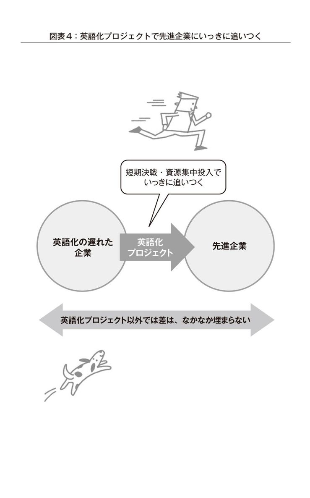
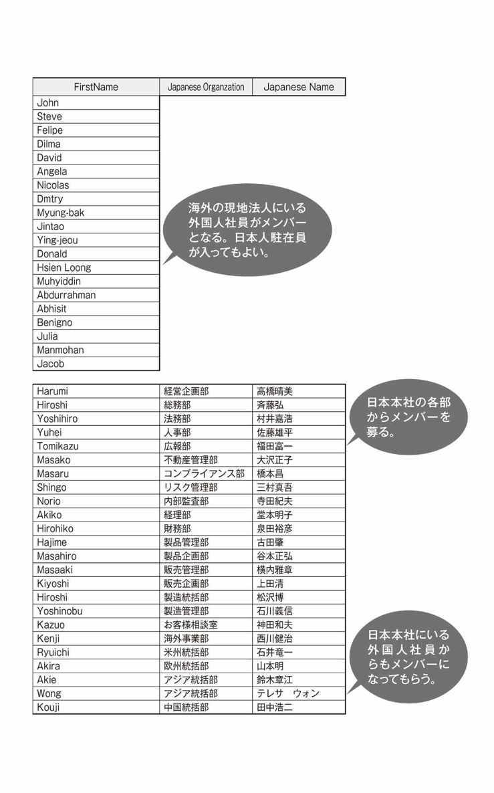
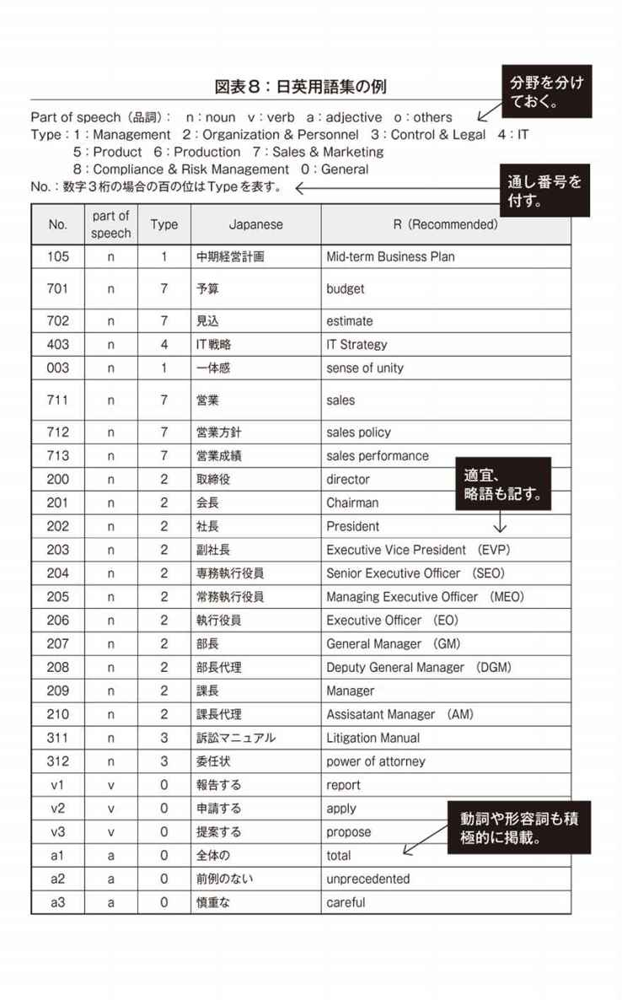

| 「組織英語力」の作り方―社内英語化のための環境整備マニュアル | |
| 小林 一雅 | |
| (2011) | |
この作品は、2011年10月東洋経済新報社より刊行された書籍に基づいて制作しています。
電子書籍化に際しては、仕様上の都合により適宜編集を加えています。
また、本書のコピー、スキャン、デジタル化等の無断複製は、著作権法上での例外である私的利用を除き禁じられています。本書を代行業者等の第三者に依頼してコピー、スキャンやデジタル化することは、たとえ個人や家庭内での利用であっても一切認められておりません。
「組織英語力」の作り方
──社内英語化のための環境整備マニュアル
多くの企業の海外進出や国際化がここまで進んでいる今日、英語がそのツールとして重要なのは当然ですが、各企業でそのインフラともいうべき部分を組織で戦略的に推進している例は意外に少ないようです。
実際、企業が「英語力を強化する」場合には、個々の従業員の英語教育に重点が置かれる場合が多く、会社の組織的な施策として英語化をどのように進めるかについては、あまり体系化されてこなかった感じがします。
その意味での「英語化」は、当たり前すぎて、各企業が手探りで行い、なんとか最低限はできていたものともいえるでしょう。
本書は、その枠を打ち破り、組織として戦略的に英語力強化を目指す、つまり「組織英語力」を高める実践的な方法を提案するものです。
私は、組織コミュニケーション力は事業の基礎力だと思っていますが、それは、日本語の場合でも、英語の場合でも、「A：個人のコミュニケーション力」×「B：組織体としてのインフラ」という式で表せると考えています。
これを英語の場合で考えると、Aが従業員個人の英語力強化、Bにあたるのがこの本で取り上げる「組織英語力」であり、社内英語化のための環境整備＝「英語化プロジェクト」で強化可能な部分ということになります。
「組織英語力」をもっとわかりやすくいえば、こういうことです。本文にも書いてありますが、たとえば社内の英語表現が統一されていないとか、各種社内規定の英語訳がないとか、製品マニュアルの英語版がなかなかできないという問題に企業が直面することがあります。
こうした問題というのは、個人の英語力を高めたり、英語の達人をそろえたりするだけでは解決できないことはおわかりいただけるでしょう。このような問題の解決のためには、組織として制度、仕組み、ツールなどのインフラを整える必要があり、この総合的な力が組織英語力なのです。
今日盛んな英語の公用語化議論との関係でいうと、公用語化する、しないにかかわらず、およそこの組織英語力は必要であると思います。
ということで、本書の一番の狙いは、この組織英語力の重要性を指摘し、これを短期間で合理的に強化するノウハウ、つまり英語化プロジェクトの進め方をお伝えするものです。
そして、さらに英語のコミュニケーションに関連する問題について、組織の観点から取り組むべきポイントを示していますので、あわせてご参考としていただければと考えています。
この本を手にされた方々は、おそらく所属される組織（この本では便宜上「企業」と書きますが、官庁や学校でも本書は役立ちます）で、海外事業を成功させるために、どうしたら外国人社員あるいは顧客、パートナーとの英語でのコミュニケーションを充実できるかを考え、悩んでいらっしゃるものと思います。本書が、皆さんの一助になればと願っています。
2011年8月
筆 者
「組織英語力」の作り方──目次
□個人の英語力への取り組みはすごいが
□個人の英語力では解決できない問題がある
□「組織英語力」とは
□こんな事例があなたの会社にないか
□外国人は「あなたの会社の英語力」をどう評価しているか
□「組織英語力」がなければ、コストを払うことになる
□コストの垂れ流しは広範囲に及ぶ
□経営リスクも負う
□「個人英語力」から、「個人英語力＋組織英語力」へ
□「組織英語力」の強化は、抜群に効率的な投資
□「企業」以外の組織にも、大企業にも中小企業にも
□概略とメニュー
□英語化プロジェクトの「適齢期」
□すぐやるということ......英語化プロジェクトはノーリスク、ハイリターン
□短期決戦とメンテナンス
□副次的効果のこと
□どんな英語力が必要なのか
□「4種類の英語」という見方......まず「専門的」か「一般的」か
□次に「技術的・科学的」か「社会的・文化的」か
□自分の会社、業務の立ち位置を知る
□内需関連の企業の場合
□外資系企業や従来から海外に進出している企業の場合
□企業以外の組織、「輸入型」企業の場合
□組織で全資源を動員する
□事務局は、「海外事業部」「国際企画部」「海外支援本部」
□各部門からメンバーを出してもらう
□外国人社員をメンバーに加える
□native speakerもnon-native speakerもメンバーに
□外国人社員の気持ちを考える
□トップの理解と支援
□社内への周知
□短期決戦の重要性
□進捗状況の確認
□安定軌道化から「ポスト英語化プロジェクト」へ
□予算のこと
□「全社」プロジェクトの難しさ
□各職場単位でもできること
□用語統一の重要性
□まず専門用語から
□次に社内用語
□社内組織や肩書のこと
□動詞も決める
□形容詞も
□ビジョン系の言葉
□タグラインを考える
□実際のまとめ方
□戦略的に英語化を進める
□必要度に応じて4つに分類する
□留意点
□広報誌の重要性
□どうすればいいか
□関連して留意するべき点
□外国人に実際に社内を歩いてもらおう
□本社以外の拠点への英語表示の広げ方
□今や必要不可欠なインフラ
□どんなことが可能になるか
□メンテナンスにも相当の覚悟を
□アクセス権限の問題
□英語化プロジェクトとしての外国人社員の本社勤務
□外国人社員がいることの効用
□外国人社員と社内英語会議
□文書ルールの重要性
□なおさら重要な英語の場合
□情報伝達の区分
□定型表現も大事
□使うべきでない表現も明記する
□電子メールでの表現も意識する
□増大する翻訳ニーズにどう対応するか
□翻訳インフラの重要性
□社内翻訳スタッフ
□総合職が翻訳業務を行う可能性
□難しい業務量管理
□社外翻訳業者の活用
□社内翻訳オーダー制度
□本社による管理のジレンマ
□現実的な対処法
□外国人社員の声は天の声
□native speakerとnon-native speaker
□最後は事務局が決めなければならない
□メンテナンスも必要
□「海外コミュニケーション部会」へ発展的改組
□分野別に英語化の特徴を考える
□X：「何を伝えたいのか」 Y：「何が伝わるか」 Z：「その結果、何が起こるか」
□日本語で作るとき、英語版のことも考えておく
□本当に外国人にそのまま伝えていいか
□native speakerは少数派
□「相手によって英語を使い分ける」という意味
□non-native speakerを意識した取り組み
□「結論を先にいう」は本当か
□「はっきりいう」ことの実際
□謝るか、言い訳をするか
□同じにするか、違ってもいいか
□英語という基礎インフラ
□海外広報戦略に取り組む
□社是からコアバリューへ
□クールに考える
□たとえば中国語化プロジェクト
□「日本語化プロジェクト」という発想
□トップも英語で語る時代
□トップのスピーチの難しさとコツ
□「通信の壁」と「言葉の壁」
□読み書き英語の復権
□横横コミュニケーションのすすめと情報管理
□同一に扱えること、扱えないこと
□外国人社員と英語でビジョンと夢を語る
□英語公用語化議論との関係
□英語の障壁をゼロにできるか
装丁・冨澤崇（EBranch）
本文DTP・アイランドコレクション
本文イラスト・原田美香
この章では、「組織英語力」とは何か、なぜ必要かを説明し、その強化のために「英語化プロジェクト」を提案します。またその前提として、自組織に求められる英語を分析するために「4種類の英語」という見方を紹介します。
□個人の英語力への取り組みはすごいが
今日、どこの企業あるいは組織でも、海外進出や国際化を進めようとするとき、コミュニケーションは英語で行います。
近時、ユニクロや楽天のように社内の公用語を英語にする動きも大きな注目を集めていますし、これまでもいくつかの日本の有力企業が社内で英語を公用語化に準ずる形（たとえば会議や書類を英語で行う）を試みたことがあります。
こうした動きは、その都度、世間で話題となり、「日本の国際化に必要」「大変な先見の明」、あるいは「そんなことがうまくいくのか？」「日本企業がそこまでやる必要があるのか？」などと、賛否両論を引き起こしてきたようです。
私が強く感じるのは、こうした企業の英語力の強化法は、これまでほとんど個人の英語力向上に重点があったということです。たとえば、社員のTOEIC受験を奨励したり、英語研修を会社で実施したり、またそもそも英語のできる人を採用したりという方法が広く行われてきました。
実際、社員個人の側も、昇進あるいは入社そのものがかかるとなれば、みな真剣になるのは道理で、日本のTOEIC受験者数はうなぎ登りです。2010年には、のべ178万人がこの試験を受け、その平均点は年々上昇しています。
会社側、個人側とも、これにかけるエネルギーはすさまじく、各地のTOEIC受験講座は盛況であると聞きます。
個人の英語力の向上が、そのまま会社全体の英語力の向上に直結することはそのとおりであり、こうした取り組みは、相応の成果があったというべきですが、それだけでは企業としての英語によるコミュニケーションは十分でないと私は考えています。
□個人の英語力では解決できない問題がある
たとえば、日本語のある用語に対応する英語の用語が同じ企業内でバラバラだったら混乱が生じます。一例をあげれば、「中期経営計画」という言葉は、どの企業にも非常に馴染みのある言葉だと思いますが、これに対応する英語訳としては、「mid-term business plan」「mid-term management plan」などが考えられます。どちらも立派で問題のない英語です。ただここで、両者を整理しないで並立して使用することは、日本語で「中期経営計画」と「中期事業計画」をチャンポンに使うことを容認するのと同じで、秩序ある組織としては受け入れ難いはずです。
それでもほとんどの場合、なんとか通じるでしょうし、日本語の標準語と方言程度の差であれば許容範囲ともいえましょう。
ただ、ことビジネスにおいて、正確さが求められる場合が多いとすれば、わずかの違いでも致命的、あるいはそこまでいかなくても少なからず大きな問題を引き起こす可能性が高いといえるでしょう。
実際、合併した企業が最初に取り組むのは、社内用語の統一であるようです。筆者の勤務する業界では、ここ10年ほど多くの合併がありましたが、どの場合でも、同じ行為や事象を示すにも会社ごとにかなりの言葉の差があり、相互理解を円滑に進めるためには「用語集」の存在が不可欠だったようです。
用語ばかりではありません。文書の形式や使用するフォームにしても、同じことがいえます。
もし、海外の現地法人に指示する文書の形式に個人ごとに差があったらどうでしょう。受け手の現地の外国人社員たちは、おそらく「日本の本社はずいぶんと統一がとれていないな」という印象をもつに違いありません。
このことは、それだけで済む問題であるといえないこともないですが、やはり解決するに越したことはありません。
もちろん、人それぞれスタイルがあっていいのですが、ビジネスではそれも程度の問題であって、同じ組織である以上、一定の公約数は必要です。
またせっかくすばらしい商品が日本にあるのに、その英語の解説書がないために（あるいは英訳の速度が遅いために）、海外の顧客に紹介されないというのも困った話です。
たとえば、ここに日本で爆発的に売れた製品があるとします。しかし、実は使い方がかなり複雑であり、また日本語で書いたマニュアルもわかりづらいとします。
こんな場合、魔法のようにボタン1つで英語版マニュアルが出ればいいのですが、そう話は簡単ではありません。このマニュアルを英語化することは相当の難作業であるという事実が厳然としてあります。では具体的には、どんな困難があるのでしょう。
・日本語でさえもわかりづらい内容をどう英語に直すか。誰が英訳するのか。
・社内の誰かにやってもらうのか、それとも外部業者に丸投げするのか。
・専門用語は、日英が1対1で正確に対応しているのか。そもそも専門用語の用語集はあるのか。
・最終的な英語の内容について、誰が責任をもつのか。
など、この英語版マニュアルが即時に出ないという問題をめぐる課題はいろいろとあるわけです。
1つはっきりしているのは、こうした問題は、仮に英語の達人が社内に相当数いたとしても起こりうる、そして解決できない問題だということです。
□「組織英語力」とは
ここで「組織英語力」という概念が重要になってきます。
そもそも組織力とは何かを考えてみましょう。スポーツの例を考えてみればわかりやすいことですが、テニスのような個人競技は別として、団体スポーツであれば、それは明らかに選手の個人としての力量に加えて、個人と個人を結ぶチームとしての力という部分が大きな比重を占めることはいうまでもありません。
どんなに一人ひとりの選手の力が優れていても、チームとしてのまとまりがなければ、チーム全体の力は発揮できません。私は、似たようなことが、英語のコミュニケーションの問題についてもいえるのではないか、と考えてきました。
学生から社会人になって、組織の一員となったとき、あるいはそうでなくても、長年いた会社から他の会社に転職したときなど、誰でも新しい組織内のルールに驚くことがあるものです。
その中で、コミュニケーションの問題、たとえば文書の書き方、用語の使い方などもかなりの違いを実感することの1つではないでしょうか。
企業としての英語力を考えた場合も、個人のレベルで英語を勉強し、TOEICの点数を上げるような努力は、野球やサッカーでいえば、個々の選手が個人としての技を磨くようなものです。
そして、強いチームになるには、個人の力量以外に、チームとしての練習や結束が必要であるのと同じように、組織として強い英語力を作ろうとすれば、組織としての取り組みが必要になります。
たとえば、前述の英語の使用用語の統一ということは、個人の英語力とは基本的に関係のない問題です。いくら英語が達者な人が多くても、その人たちの使う英語の用語が統一されていないということはありうる話です。
ですから、これは個人としてではなく、組織として各企業が取り組むべき課題であることは明らかです。
また英語の解説書がないという例も、英語のできる個々の社員を養成すること以外にも、その解決に必要なことは多々ありそうです。
そこには組織的なインフラや制度の欠如という問題があるのではないか、と考えるべきであり、事実、そういうことが課題である場合が多いはずです。
こう考えてくると、企業にとっての「英語力」というのは、個々の社員の英語力にとどまらず、組織的に整備する体制やインフラによっても大きく左右されるということがわかるでしょう。
私は、こうした個人の英語力を十分に発揮させ、1プラス1を3にも4にもするような、組織の力を「組織英語力」と呼んでいます。
□こんな事例があなたの会社にないか
もう少し例をあげましょう。皆さんの会社でも、あるいは皆さん自身も、英語をめぐる意思疎通の難しさ、珍事象の類は、これまでに少なからず経験されてきていると思います。
本社から発信された英語の表現が稚拙であったために混乱が生じた、あるいは日本本社の規定に英語訳がないために海外にいる外国人社員の理解を得るのに困った案件があったなど、海外に関連する業務に従事されている方ならそうした経験は多かれ少なかれあるはずです。
重要な問題は、そうした事態がどのように組織として認識され、対処されてきたかということです。
ある会社では、次の日本語を英訳（図下）して海外にいる外国人社員に発信したところ、苦情が寄せられました。どんな苦情であるか考えてみてください。
寄せられた苦情は、おおむね以下のとおりです。皆さん、どうお考えになりますか。
＞＞言葉の定義が不十分
「『予算』『見込』の区別がわかりづらい」
実は、ここではこの2つの言葉は非常に重要なのですが、英語ではよく定義が伝わっていないために、混乱を起こしています。
事実は、この会社では、年度初に設定する予算を「2011年度予算」のようにいい、9月末の状況を反映して、10月中旬に修正して再設定する目標値を「中間予算」といっています。
そして、ここで指示された「最終予算見込」は、結局どういう数字になるかという「予算」というよりは「見込」のことで、例年2月頃に海外の現地法人に対して求めています。
ただ長年の社内の使い方の結果として「最終予算見込」なるまぎらわしい言葉が定着してしまい、これを海外には何の説明もなく、「final budget estimate」のように英語に直訳して出せば混乱が生ずるのは当然といえます。
この3つの用語は、日本語であってもこれだけまぎらわしいのですから、英語にする場合には、はっきりと「Year-Beginning Budget」「Mid-Year Revised Budget」「Final Estimate」のように「budget」（予算＝あらかじめ設定する目標値）と「estimate」（見込＝目標ではなく、かなりの客観性をもって予測する数値）という言葉を正しく使って、はっきりとした意味を示す必要があります。
こうした例は、まぎらわしい言葉が引き起こす典型的な混乱事例で、また一部の関係者の間では少なくとも日本語であるうちは、なんとか意思疎通ができていたが、英語に直した途端に、問題が露呈するという事例であるともいえましょう。
＞＞日本固有の表現をそのまま使っている
「『年度』という言葉が明確に伝わっておらず、仮に『年度』であるとしても、日本的な4月～3月なのか、海外で一般的な1月～12月なのか判然としない」
発信者からすれば、「日本の会社なのだし、この日付を見ればわかるだろう」と言いたくなるのでしょうが、最近、日本企業のグループ入りをしたような海外現地法人の外国人が受け取った場合には、そう簡単にはいかないと思います。ご存じのように、法人の「年度」が4月～3月という国は、世界では少数派です。
やはり、「FY2011」のように「年度」であることを明確にしたうえで、「当社グループで日本本社がFY（＝Fiscal Year）と記すときは、特段の断りがない限り4月～3月の年度を指す」というようなルール化や説明が必要でしょう。
このように少し考えれば当たり前のことを気づかずに発信してしまうというのは、担当者の個人的な責任の問題であると同時に、組織としてのルールがないことも一因と考えられます。
＞＞背景説明が不十分
「指示の背景説明がなく、『何のためにやるのか』がわからないので、仕事を難しく感じさせている」
背景説明が重要なことは、ビジネスでも日常生活でも、日本語でも英語でも、当然のことです。ましてや英語という我々にとっては母国語でない言葉で情報を発信するのですから、背景説明は言語の稚拙さを補うものとして、より重要であると考えるのがいいでしょう。
この例でも、この指示文に前述のこの会社の年間の予算管理の運営法や、「Year-Beginning Budget」「Mid-Year Revised Budget」「Final Estimate」という言葉のもつ意味についての説明があれば、この指示を受けた海外の外国人社員はずっと仕事への理解も早く、やる気にもなったことでしょう。
さらにいえば、本社の事情に疎い外国人に対して発信する文書は、日本語の英訳プラス「背景説明」を付すということを日頃から意識する、さらにルール化するくらいの工夫が必要であるともいえます。
英訳を作成するときには、どうしても日本語を忠実に訳すという意識が先立ち、訳してしまえばそれで終わりとなりがちで、さらに背景説明を付加することがなされない場合が多いようです。でも、この背景説明は非常に重要なことです。
その解決のためには、「英文で海外の外国人に出すときは、十分な背景説明を行うこと」「複数の担当者が必ずチェックを行うこと」などのルールを策定し、実行することなどが考えられるでしょう。
＞＞日付表記の基準がはっきりしない
「締め切りが3月2日なのか、2月3日なのかわからない」
これも、日付の表記という広い意味での英語の問題として、海外とのやりとりではよくある問題です。
読者の皆さんもご存じと思いますが、2011年9月1日ならば、日本では2011/9/1、アメリカならば9/1/2011、欧州ならば1/9/2011と表記し、アジアの各国はまちまちという状況です。
この問題は、大げさにいえば、今日、ビジネスマンに限らず、いろいろな人を苦しめている問題です。そのために、世界中の人々が多大なコストを払っているといっていいでしょう。皆さんも海外で、あるいは国内にいても、日付の表記の問題で迷ったご経験はあるのではないでしょうか。
少なくとも、同じグループ企業の間では、こうしたことは文書をもって統一基準を定めるのがいいと思うのですが、それが徹底されている企業は意外に少ないようです。
＞＞外国人には非常に違和感のある「ご多用中恐縮ながら」「小職」等の直訳表現が入っている
「ご多用中恐縮ながら」のような表現は、最近では日本でも多くの企業の文書マニュアルで時代錯誤で非効率なものとして使用しないことが求められています。
したがってこのケースでは、この言葉は不要だ、と結論づけることもできます。ただ、ここは締め切りをタイトにしているのだから、「すまないが協力してくれ」という「気持ち」を英語でも伝えたほうがいいと考えることもできます。
それでは、英語でこの「気持ち」を伝えるには、どうすればいいのか。「ご多用中恐縮ながら」に込められた「気持ち」を素直に英語で伝えるときの表現は？
おそらく、ここでの正解は、「ご多用中恐縮ながら」の英訳を「I am sorry」ではなく、「Thank you for your cooperation～」のようにするということになるのではないでしょうか。
一般に英語圏の文化では、日本語の「すみません」（＝軽いお詫び）に相当する気持ちは「ありがとう」（＝感謝）で表現するほうが適切なことが多いと理解する必要があります。
こうした問題は、文化の問題とも重複する奥の深い性質のものであり、一律にルール化は難しいと思いますが、それでも組織の中で仕事をする一員としては、常に心に留めておきたいものだと思います。
□外国人は「あなたの会社の英語力」をどう評価しているか
あなたの会社の英語力について、それを一番身近で評価する立場にいる外国人社員や、外国人顧客はどのように感じているでしょうか。このことをあらためて考えてみる必要があります。
照れくさいでしょうが、まずは皆さんも周りにいる外国人の社員や仲間に、この質問をしてみてください。
評価の対象となる英語力は、直接的には個人から発信するものですから、正確にいえば、「あなたの会社の英語力」とは、つまりあなたの会社の社員の集合体としての英語ということになり、その平均的なレベルや共通する特徴が、外国人が実際に認識するものであるということになります。
これまでの経験や面談から、私は多くの会社でおおむね以下のいくつか、あるいはかなりの数が、彼らの評価としてあたるのではないかと考えています。
【外国人社員から】
・社内で発信される英文の用語や表現が統一されていない。本来は語義が狭いはずの専門用語にも、語義が広い一般用語にも不統一は見られ、受け手として混乱してしまう。多少の差ならば許容範囲であるが、どう見てもそうはいえないものもある。ときには一番大事なkey wordが人によって異なることがある。誰か一元的にコントロールをしたほうがいいのではないだろうか。
・日本本社から指示のあった仕事をするのには、日本本社の規定があれば助かるのに、誰に聞いても「英訳はない」という。その結果、どうしても部分部分をその場しのぎで訳してもらうことになってしまう。
それらはどうも蓄積、共有されていないようだ。もったいない感じがするし、やはり最初から重要度の高いものは、英訳を完全にそろえておいたほうが、効率的で結局は経済的なのではないだろうか。
・日本本社から指示の背景をもっと英語で説明してほしい。日本人駐在員のところにくる日本語説明のほうが詳しかったり、日本語でしかない資料もあったりするようだが、英語でも同レベルの詳しい情報がほしい。
こうした日英の情報量の差は、差別的な感じもするので、心情的にもやめてほしいと感じる。
・日本国内で何が起きているか伝わってこない。日本本社はさかんに「グローバル化（globalization）」をいうが、実際は一方的な指示ばかりで、なぜその指示が必要かの背景もわからず、共感が生まれるような情報の発信が乏しい。
・日本の本社ビルに行ったが、英語の表示がなく、日本語のわからない自分は困ってしまった。社内を一人で歩いても迷子状態になってしまう。これでグローバル企業といえるのだろうか。日本語のわからない外国人が社内に来たときのことを意識したインフラをもっと整えるべきだ。
・社内には日本語の広報誌があると聞くが、これを英語でも作ってもらえないのだろうか。ぜひ重要な情報やスピリットを世界の仲間と共有したい。
・先に発表されたグループビジョンは、日本語からの直訳という感じが非常にする。作成の段階から外国人に参画させていれば、ああいうようにはならなかったのにと残念に思う。
・日本国内には、日本語版の社内イントラネットがあるし、我々の海外現地法人内にも英語版のイントラネットがある。だが、全世界を網羅するものがない。この時代に、グループ社員の全員が、共通語である英語で同時に見られる社内イントラネットがあれば、連帯感やモラルの向上はもちろん、業務の効率も大幅にアップすると思うのだが。
・日本本社には、外国人社員が一人もおらず、会議も文書もすべて日本語と聞くが、大丈夫だろうか。こんなことも、海外の現場の実態がわからないということにつながっていないか。すべて日本語が完全になってから、英語に直されたものが海外の外国人社員に発信されるという印象があるが、最初から英語で議論し、作成するということは無理なのだろうか。
・英語で発信する文書の基準を統一したらどうか。日付1つとっても、さまざまな表記があって混乱している。スタイル、様式ももう少し統一感があったほうがいいのではないか。
・本社で英訳された文書は、ずいぶんと出来のよしあしに差がある。出来のよい文書は、社内のことがわかっている人が訳しているという感じだが、そうでないものは社外の素人が訳したからか、専門用語にすら誤りがある。
いったい誰が訳しているのか。そもそも日本語の文書が先に配布されて、「英語版はあと少し待ってほしい」と言われることがよくあるのだが、もっと資源投入をして英訳を迅速に行い、同時発信してほしい。
【外国人顧客から】
・取り扱い説明書の英文が稚拙でわかりづらい。こんなに誤解を招く表現が多くては、使用法を誤って事故が起きる可能性もあるし、そうなれば訴訟事件にもなりかねないが大丈夫か。もっと正確にわかりやすく書くべきではないか。
・商品のパンフレットの表現には、国によっては社会的、文化的に問題のある表現が散見される。単に辞書的に直訳すればいいというものではないはずだ。もっとお金をかけてでもチェック体制を強化してはどうだろうか。
・企業のPR用のキャッチフレーズや、商品名が我々native speakerの耳には変に聞こえる。いったいどうやって英訳をし、また誰が責任をもってチェックしているのだろうか。外国人に実際に確認を行ったのだろうか。
・御社の出すビジネス文書は意味のわからない箇所がある。
実際にこんな露骨な言い方で指摘されることはないかもしれませんが、そういうふうに思われる可能性があることは、多くの方がうなずかれるのではないでしょうか。
【外国人投資家から】
・御社のIR資料はわかりづらい。特に、会社のビジョンや戦略を述べた部分などは日本語の直訳調で、読むのに一苦労である。もう少しこなれた英語にならないのだろうか。
・御社のホームページの英語版は日本語版に比べてずいぶんと簡素化されて量が少ない。ぜひとも日本語と同じ量を提供してくれないだろうか。
・専門用語の使い方が統一されていないようだ。同じ冊子の中でも不統一が見られるのはいかにも奇異だ。正確な情報伝達という観点から、特に投資家を混乱させないという観点からも、現状は問題ではないか。
・資料に記載された内容には、重要と思えないものがある半面、当方が重要と思えることが抜けている。日本人が考える重要と外国人が考える重要とは基準が違うのだろうか。
ずいぶんと列挙してしまいましたが、皆さん、いかがでしょうか。ここにあげた事例は、どれもそのほとんどが、どんなに英語が堪能な個人がいてもそれだけでは解決できない問題であること、つまり「組織英語力」が問われているということがおわかりいただけるのではないでしょうか。
□「組織英語力」がなければ、コストを払うことになる
もう少し「組織英語力」の必要性を話します。まずコストのことからです。私は、企業は、組織英語力が弱いために生じているコストをもっと正しく認識するべきだと思っています。
おそらく皆さんの属する組織でも、本社から発信する際には英語化が徹底されずに、結果的に日本語での指示がそれぞれ現場の受け手側で英語化されているという例があるのではないでしょうか。
これなどは、本社の海外部門スタッフに英語化する余裕や力がないことが原因であり、ともすると日本語で、あるいは不完全な英語で、文書を発信し続けるという事情に起因するものです。
「英語化する余裕がなく」と書きましたが、その先にある原因を考えることが重要です。よく分析してみると、多くの場合は、やはり英語インフラが乏しいことが多いようです。
それはどういうことかというと、たとえばまず英語で出すというルールがないことが考えられます。これでは、日々業務に追われる本社スタッフがときには日本語のままで文書を発信してしまう誘惑にかられてしまいます。
あるいは、日英用語集などのインフラがないということもあるでしょう。これがなければ、正確な英訳はおぼつかないものです。
そして、翻訳要員が手配できないということもあるのではないでしょうか。翻訳の体制というのは、後で詳しく述べますが、組織の英語インフラの重要な1つです。
このような例からも、企業の英語の実力は、個人の英語力もさることながら、組織としての力、つまり組織英語力という概念で整理できることがおわかりいただけると思います。
□コストの垂れ流しは広範囲に及ぶ
ここにあげたコストの垂れ流しは、社内やグループ内だけで発生するのではありません。
何より社外の顧客やビジネスパートナーに対して、不十分で不整合な英語を日本人社員が、いや世界中のあなたの会社の社員が使っているとしたら、それは膨大な損失であるといえます。
また先の例でも述べましたが、訴訟リスクにもつながります。実際に、製品のマニュアルが不備であったり、警告の表記が不十分であったりするために、製品についての賠償責任が問われるのは、訴訟社会のアメリカはもちろん、今日では世界中でありうる話です。
こうした表記の問題が、社内の英語力、それも個人の力では解決できない、組織の力、つまり「組織英語力」の欠如によるということはありうる、そして実際にある話です。
また、何よりビジネスの機会損失コストが大きいというべきでしょう。もっと迅速で正確に大量の情報交信を英語でしなければならないとき、これが「組織英語力」の欠如によってかなわない場合があります。それによって、ビジネスの機会を逃すことが起きうるのです。
以上のようなコストは、社員個人の英語力に問題がある場合もありますが、広い意味で会社の英語インフラが未整備、つまり組織英語力が弱い場合に発生するものとして、日本の企業の経営者にはもっと正しく認識されるべきだと考えます。
□経営リスクも負う
コストに加えて、組織英語力の欠如からくるもう1つの大きな問題は、コミュニケーションの欠如という経営上のリスクです。
コミュニケーションの欠如が経営リスクであるということは、最近ではだいぶ理解されてきたと思いますが、このことは私が指摘するまでもなく、リスク管理の基本とされるCOSO（後述）のフレームワークでも、「情報とコミュニケーション」という項目があり、コミュニケーションの欠如は主要なリスクとして理解されています。
海外展開する企業の場合には、英語力、特に組織英語力が低いことがコミュニケーションの欠如の一因となる可能性が高いことは間違いありません。
事実、日本企業の本社が海外現地法人を内部監査した場合、本社との「コミュニケーションの問題」が指摘されることがどの会社、業界でも多いようです。
これは、内部監査人が実際に発生した海外の問題事案を分析したとき、コミュニケーションの問題が多かれ少なかれその原因となっていることが多いということでもあります。
とはいえ、実際のコミュニケーションの問題はいろいろと複合的な原因によることがほとんどです。無論、1つには組織の風通しの問題や、さらには社風の問題など、言語とは関係のない意味での意思疎通が悪いなどの問題が含まれることもあるでしょう。
一方で、「本来は英語にされるべき文書が英語にされていないから、外国人社員に情報が入らない」など、まさに組織英語力の欠如の問題が指摘されることもあるようです。
実際、日本企業の海外現地法人に勤める外国人の幹部に、「あなたの現地法人の経営上のリスクは何か？」と尋ねると、少なからず「日本本社とのコミュニケーションがうまくいかないことからくる、さまざまな問題」という回答が多くの企業で寄せられます。
ここでいう「リスク」というのは、コミュニケーションがうまくいかないことそのものではなくて、その結果として、重大な経営上の判断に誤りが生じてしまうようなことであり、外国人社員、特に海外にいる幹部たちは、そのことを心配しています。
そして、それではどんなことが具体的に問題になるのかと聞いてみると、確かに「Mr. Suzukiの英語はわからない」などという指摘もある一方で、本社の外国人へのコミュニケーションの姿勢やインフラという問題が指摘されます。
それではさらにその中身は、と突っ込んで聞いてみると、本社の規定の英語化が不十分、稚拙であること、英語での情報量が日本語のそれと比べて圧倒的に少ないことに対する不満といったことが出てくるのです。
実際、皆さんも外国人とのコミュニケーションの問題でヒヤッとした経験をおもちだと思います。
こうしたコミュニケーション上の問題のすべてが英語の問題であるわけではありませんが、やはり少なからぬ部分が、英語の問題にあることは否定できません。
そして、ここで指摘しておきたいのは、組織のリスクという観点から考えた場合、その「英語の問題」は、繰り返しますが、個人の英語力もさることながら、個人の努力だけでは解決できない「組織英語力」にある場合が多いということです。
そこで、全力をあげて英語のインフラを整備すること、つまり「組織英語力」を向上させることは合理的な経営判断であるといえるでしょう。
＊COSOフレームワークについて
「情報とコミュニケーション」は、企業のリスク管理の基本原則であるCOSOフレームワークにおいて、リスク管理上の5大要素の1つとされます（他の4つは、統制環境、リスク評価、統制活動、モニタリング）。
ご存じの方も多いと思いますが、COSOとは、The Committee of Sponsoring Organization of the Treadway Commission（トレッドウェイ委員会組織委員会）の略で米国政府の内部統制に関する委員会であり、ここが1992年に発表したレポートにある内部統制の原則論がCOSOフレームワークと呼ばれるものです。
その中の「情報とコミュニケーション」では、さまざまな情報を、経営者や社員のみならず、顧客や協力会社などの社外の関係者にも適切に伝えるための仕組みのあり方について述べています。
たとえば、会社の方針・施策・経営に関する疑問や問題などを社員から吸い上げたり、顧客からの要望・意見・苦情を関係部門に的確に伝えたりするためには、よく整備された仕組みとその機能性が重要だということです。
つまりどんな立派な内部統制の仕組みを作っても、組織内の意思疎通が疎かでは、万事に適切な機能は期待できないという考え方です。もしも英語という言語的な問題、特に私がここでいう組織英語力の欠如に起因する問題で、「情報とコミュニケーション」が阻害されるとすれば、それは1つのリスクであるといえましょう。
□「個人英語力」から、「個人英語力＋組織英語力」へ
さてここまでお読みいただき、企業にとっては、個人の英語力に加えて、「組織英語力」が必要であるということがおわかりいただけたと思います。
「組織英語力」とは、企業等の組織が、さまざまなインフラ、制度、ルールを整備して機能させる組織としての英語の実力なのです。
個々人の英語力を補強し最大限に引き出し、組織全体として何倍ものパワーアップを実現する組織の力、ともいえるでしょう。この力が高まったとき、企業は言葉の障壁を極小化したことになり、海外事業、国際化の成功のための条件を1つ整えたことになります。
ちまたにいわれる英語の公用語化（これについての筆者の見解は後に述べます）も、この組織英語力という基礎インフラがなければ定着しないでしょう。
しかし、これまで日本の企業は、個々の社員の英語力の強化には熱心で気前がよかったのに、この組織英語力の強化については体系的に実施してきたことは多くなかったようです。
皆さんの会社でも、TOEICの受験料負担とか、英語教材費用の補助制度のような個人ベースの英語強化策への支援は相当にあると思いますが、この本で紹介するような取り組みはあまりなかったのではないでしょうか。
おそらく、この部分は企業内で正規の仕事として認知されることなく、各企業が手探りで進めてきたというのが実情なのだと思います。この本で私が提唱する「英語化プロジェクト」は、これを打ち破り、「正規の仕事＝プロジェクト」として、この「組織英語力」を短期間で強化することを目指すものです。
□「組織英語力」の強化は、抜群に効率的な投資
もう1つお伝えしたいのは、「組織英語力」を強化するのは大変に効率のいい投資であるということです。個々の社員の英語力強化のためには、いろいろな形で費用をかけなければなりませんが、「組織英語力」の強化はあまり費用がかかりませんし、組織の意思疎通能力をいわばいっきに高めることができます。
これまで日本企業は、個人の英語力強化には相当のお金をかけ、自社の社員教育には力を入れてきたのは前述したとおりです。
一人ひとりの社員に英語教育を施すのも、企業にとって大切なことですが、それはいわば一本釣りのような地道な取り組みです。
私がここで提案する英語化プロジェクトによる組織英語力の強化は、それに比べれば大網で漁をするようなもので、その効果は非常に早く明確に出るものといえます。この本を手にされた皆さんは、ぜひともそのことを理解していただければと考えています。
□「企業」以外の組織にも、大企業にも中小企業にも
さらにお伝えしたいことは、本書で取り上げる内容は「企業」と限定する必要はなく、官庁でもNPOでも学校でも有効であるということです。
近年、国際化が進み、海外との交流が深まっているのは企業だけではありません。地方の官庁でも海外との接点は大きく増えてきていますし、学校にも海外からたくさんの留学生が来る時代です。NPOでも、海外との接点は多くなっているのではないでしょうか。
こうした状況下で、1つの組織としての英語力の向上、つまり組織英語力の強化が求められている点は、企業以外の組織もまったく同じといえるでしょう。企業と企業以外の組織とでは、組織英語力という点については本質的に区別する必要はないのです。およそ組織である以上、ここで述べる強化策は有効です。
また、組織の大きさはさまざまでも、組織英語力の基本となるメニューの大半は中小企業から大企業まで幅広く実行可能です。
一方、海外事業への進出の歴史・現状という点では、各企業と組織には大きな違いがあるのはいうまでもありません。組織英語力の強化はこうした個々の組織の性格、規模によってメニューの個別対応が必要となります。
ですから、これから述べる内容を標準的な例として考えていただいたうえで、後は必要に応じて取捨選択すればいいのです。
この本では便宜上、「企業」「会社」「社員」「従業員」のような言葉を使いますが、本書は同じ問題意識をもつ官庁や学校関係の皆様にもぜひ読んでいただきたい内容です。
□概略とメニュー
以上で組織英語力とは何かということと、その重要性について理解していただけたと思います。当然、本書の次の題目は、それをどうやって強化するかということであり、私はその手段として社内英語化のための環境整備＝「英語化プロジェクト」を提案するものです。
それは、ごく簡単にいえば、組織英語力強化のために、以下のメニューを短期間に実行し実現するというプロジェクトです。
これらは、その名前を見ただけでも、だいたいの中身は推測できると思いますが、英語化プロジェクトの肝心なことは、これを系統的に組織が主体となって一定の期間内に強力に実施することにあります。
個々のメニューは、先に「外国人はあなたの会社の英語力をどう評価しているか」で述べた問題に対応する解決策にもなります。
【日英用語集の作成】
社内で多用される日英の用語の対照表を作ります。これを社内で統一した日英用語集とすることで、言葉の統一性を図っていきます。英語化プロジェクトの中でも、最初の入り口ともいえる基本中の基本です。
【社内規定・マニュアルの英語化】
社内にある膨大な量のマニュアルや規定を英語に直します。すべて一律に行うのではなく、優先順位を付して、戦略的に実施していくことがポイントとなります。
その際、やみくもに直訳すればいいということではなく、「本当に必要か」「訳された英語文書がどのように外国人に理解されるか」という点にも検討を加えていきます。
【広報誌の英語化】
もっとも有力な媒体といえる社内外の広報誌を英語化します。英語化を進めることによる海外広報の向上の余地は大きく、これを1つの起爆剤にして海外広報（＝英語による広報）全体を強化していきます。その意味では、海外広報戦略を本格的に考える場合の最初の一歩ともいえるものです。
【社内表示の英語化】
社屋内の表示が、日本語だけでは外国人とのコミュニケーションに不都合です。その解決に加えて、さまざまな副次的効果を狙い、いっきに社内表示を英語化してしまうものです。
誰にでもわかりやすい、また「うちの会社も変わったな」というように社員の意識を変えるのに効果的な手段でもあります。
【英語版イントラネットの構築】
日本語の社内イントラネットをもつ企業は多くても、英語のものとなるとまだ少数派です。そこで、英語の社内イントラネットを立ち上げるのです。これにより、外国人社員との距離はいっきに縮まり、一体感は大きく高まることになります。ただし大きな効果も出ますが、費用・労力も大きく、実施には大きな覚悟が必要です。
【外国人社員の本社勤務と社内英語会議】
世間では賛否両論のあるテーマですが、感情論に惑わされない、クールな判断による現実的アプローチを提唱します。社内英語公用語化とも密接に関連する話です。
【英語版文書マニュアルの作成】
組織である以上、コミュニケーションのルールが必要なのは英語であっても同じです。外国語で外国人と意思疎通を目指す以上、マニュアルの必要性はより高いといえるでしょう。
このマニュアルにより、英語による意思疎通から派生する無用の混乱を防ぎ、効率を高めることができます。
【翻訳体制の整備】
社内の英語に関する制度的インフラとして非常に重要なものです。どこの企業でも、この部分がしっかりしていないために、苦労を重ねている社内の部門は多いようです。これを組織として充実させることで、組織英語力は大幅に高まることになります。その具体的方法を提案します。
□英語化プロジェクトの「適齢期」
「思い立ったが吉日」とは、まさに英語化プロジェクトにも当てはまる言葉です。もしあなたが、この本をここまで読んで、「うちの会社にも思いあたることが多い」と感じたら、即座に実行を社内で提案するべきです。
一方、もう少し冷静に考えると、次のような見方ができると思います。
私がこれまでに考察した結果では、一般に企業の国際化が進み、海外事業の比率が高まるにつれて、あるとき、「このままでは、『言葉＝英語』の問題で、コミュニケーションがもたない」という危機感をもつときがくるようです。
たとえば、これまでは海外の現法・支店に日本語で日本人の駐在員に指示をしていたのに、近年は外国人の幹部が増え、英語でも発信しないと立ちゆかなくなったときがその典型です。
また、海外の売上が急速に増えてきて、海外の顧客と英語で対応する場面が多くなり、国内中心の業務に慣れていた大多数の社員の間で、「英語力を強化しなければ」という認識が生まれたときなどもそれにあたるでしょう。
あるいは、企業ビジョンを考えるのに、全社員の数十パーセントを占めるようになった外国人社員の意見を聞かないわけにはいかないという状況になってきたときです。
前者2つの例では、実務的な観点から、本社にいる日本人や現地駐在員の間で、「なんとかしなければ、これ以上はもたない」という危機感ともいえる認識が広まっている場合。後者は外国人社員の間に「俺たちにも言わせろ」的な希求の感情が目覚めている可能性のある場合です。これを放置していては、グローバル企業の資格はありません。
さらに、今は海外事業の割合は低くても、会社の戦略として限界がはっきりしてきた国内市場だけでは成長は見込めず、これから海外事業を強化しよう、と決断した場合などもあるでしょう。
楽天の三木谷社長は、2011年3月、日本経済新聞の電子版のWEB GOETHEでのインタビューで、次のように述べています。
「インターネットによって世界中のあらゆるタイプの情報が共有化されるようになっているけれど、その大半は英語です。マーケットも世界中がつながるわけだし、何か研究開発をするにしても、世界レベルでやるのが普通になっている。そこで使われるのも、もちろん英語。自分たちだけで日本語でやりますと言っても、どうにもならなくなっている」
私自身は、日本企業の英語の公用語化（その定義にもよりますが）というのは、経営判断の1つであり、ほとんどの企業にとって必ずしも必要ではないと思いますが、この「どうにもならなくなっている」という感情のもつ重みには非常に共感を覚えるものです。
本書を手にされた皆さんの会社では、この「どうにもならなくなっている」という状況になっていませんか。
もし、「このままでは、英語の障壁のために海外の顧客や外国人社員とのコミュニケーションがうまくいかず、海外事業や国際化に支障が出る」と感じているなら、まさに今が英語化プロジェクトの「適齢期」であるといえます。そして、そう感じたらすぐに実行に移すことです。
□すぐやるということ......英語化プロジェクトはノーリスク、ハイリターン
よいと思ったことはすぐにやるべき、というのは個人も企業も同じです。英語化プロジェクトでは、「すぐやること」の重要性をあらためて強調しておきたいと思います。
私が自信をもってそういえるのは、このプロジェクトはリスクやコストが効果の大きさに比べて非常に低いからです。
これからも述べますが、このプロジェクトにかかるコストはたいしたものではありません。また、リスクといえるほどのリスクは何もありません。
そして効果は非常に明白に期待できます。こんなにも効率のいいプロジェクトは他にそうないといえます。
□短期決戦とメンテナンス
もう1つ「時間」という点では、英語化プロジェクトは短期決戦で行うのがいいといえます。
国際化の歴史の長い企業や事実上外資系となった企業の中には、すばらしく英語化が進んだところがあります。そうした会社の場合、ゆっくりと時間をかけて行ってきた場合もあれば、外資系となった途端にいっきに進んだ場合もあるようです。
しかしこの本を手にされた皆さんの会社には、いっきに行っていただきたいと考えています。逆にいえば、短期間でこれを実行し、いっきに先進企業に追いつくということこそ英語化プロジェクトの妙味であるといえます。
メニューの各論1つひとつは、ある意味、平凡なもので、中身は何も私が歴史上初めて発明したなどというものではまったくありません。真剣に考えれば、誰でも思いつくような性質のものです。
ただ、それを実際に実行する場合のコツや留意点を自分自身の経験と知見、直接、間接に見聞した実例をもとに皆さんにお伝えするのが本書の目的です。
さて、上述のように英語化プロジェクトの実行は短期決戦で行うべきで、プロジェクトというからには有期であるというのが原則ですが、その後のメンテナンスも大切です。
まず、一気呵成に実施できる部分（そうでない部分もあります）は、とにかく短期間に実行することです。そして、メンテナンスという形で各メニューを息長く管理していってください。その意味では、英語化プロジェクトに終わりはありません。
□副次的効果のこと
英語化プロジェクトの効用として、次のこともお伝えしたい点です。
英語化プロジェクトを実施すると、その結果、いろいろな副次的効果が出てきます。最大のメリットといえる副次的効果は、海外事業に関わる社内の人の輪が拡大することです。英語化プロジェクトは、そのメンバーを社内の各部門の海外に関係する人から募るわけですが、彼らはその部門の中で海外のプロです。
ですから、その人たちが集まって打ち合わせをすれば、いきおい話は英語にとどまらず、自社の海外事業のビジョン、さらにはグローバル企業としての将来像、夢というような話に及ぶことが出てくることは必定です。

それは通常の個別の海外業務・国際業務で接する狭い範囲の人たちだけでなく、全部門が「英語化」を海外関連業務の最大公約数とするために結集するからです。
そこでは、さまざまな意見が交わされ、海外事業や国際化に関しての優れたアイディアが少なからず出てくるはずです。
逆にいえば、英語化プロジェクトという、緩いが広い海外事業関係者を結びつける枠組みができあがり、それが能動的に機能し始めるわけで、このことは重要な副産物であるといえます。
以上のことは、英語化プロジェクトのメンバーになってもらった海外にいる外国人社員との関係においても当てはまります。
日頃、特定の業務範囲でしか連絡し合うことのなかった外国人社員と日本本社の社員が、最大公約数的な英語化プロジェクトを通じて幅広く語り、コミュニケーションを深めれば、おのずとグループとしての一体感が醸成され、事業にも好影響を与えることになります。
実際に実行すれば、皆さんは社内にこんなにも多くの問題意識をもつ仲間がいたこと、そしてそれが不思議と今まであまり組織化された問題解決につながらなかったという事実に気づき、感銘を覚えるはずです。
これが原動力となって、社内の組織英語力が強化され、海外事業に強い会社になっていく、ぜひともそういう展開にしていってください。
□どんな英語力が必要なのか
さて、英語化プロジェクトを始める前に、考えてもらいたいことがあります。それは、皆さんの会社や業務あるいは業種が、英語というものについてどういう位置にいるかということです。
「当然、すべての面で英語が必要です」と考える方もいると思いますが、もう少し細かく見ていけば、あなたの会社で必要な英語力にはおそらく一定の傾向があるはずです。
あなたの会社は別段、英語の専門家の育成が目的ではなく、その必要もありません。
一定の事業目的を達成するための手段として英語力を強化するわけですから、おのずとそれにあった英語化があるということです。
□「4種類の英語」という見方......まず「専門的」か「一般的」か
ここで私は、企業の事業との関係において、英語を4種類に分類することを提案します。
一般に英語と日本語の関係を「訳す」、つまりコミュニケーションのために正しく置き換えることの難易度という観点から見た場合（実は、英語と日本語との間に限らず、どの外国語間にも当てはまる問題です）、やさしい言葉や分野と、難しいものという違いが間違いなく存在すると考えます。
無論、それはスパッと完全な2種類に分かれるのではなく、無段階的にやさしいものから難しいものまでありますが、簡単にいえば、やさしいものは「専門的」または「技術的・科学的」な分野であり、難しいものは「一般的」または「社会的・文化的」な分野です。
皆さんも実務の経験から「専門的」分野と「一般的」分野では、前者は個別の単語を日本語から英語へ置き換えるだけで、あとは基本構文の世界で事足りる場合が多く、その意味ではやさしいと感じていると思います。
「専門的」の典型例は、医師の英文カルテでしょう。そこでは、日英の語義が完全に1対1に対応をしており、名詞はもちろん、動詞、形容詞に至るまで、正確にそのまま訳すことが可能です。
メーカーの製造工程に関するマニュアルなども「専門的」の典型でしょう。
同じ企業の話であっても、もし内容が一般的な話やビジョンに関わるような抽象度の高いものである場合にはこうはいきません。たとえば、後の章でも触れますが、組織のトップが広い範囲の聴衆に語りかけるようなスピーチは、専門的な分野に話が及ぶ場合があるにせよ、どちらかというと一般的・抽象的な内容となることが多く、英語に訳すのは難しくなります。皆さん自身も、仕事の話ならば、なんとか英語でも意思疎通ができるが、関係のない政治や芸能界の話は非常に難しいことを経験されているはずです。
そこには、専門的な話のように1対1で明確に対応するような語彙はずっと少なくなり、文化とか社会という要素が大きく入ってきます。
ですから、ここでは、「英語化」を考えるときに、大きく「専門的」なものか、「一般的」なものか、という区分が大事であることをまず理解してください。
□次に「技術的・科学的」か「社会的・文化的」か
「専門的」「一般的」ということのほかに、もう1つの座標軸として「技術的・科学的」と「社会的・文化的」という区分ができると私は考えています。
皆さんは同じ専門的な話であっても、「技術的・科学的」と「社会的・文化的」と区別をした場合、両者の英語化の難易度には違いがあることにお気づきでしょうか。
前者は医薬品の効果に関する論文や、電子部品の製造に関する説明が例であり、後者は訴訟における弁護士の意見書や、社内の人事規定が例であるといえばだいたいおわかりいただけるかもしれません。
専門的である点で両者は共通しているのですが、前者は違う言語に訳されても、ほぼそのまま使えるものです。なぜかというと、中身が技術的・科学的で、大げさにいえばこの世の中が続く限り普遍的な事象を扱っているからです。
ところが、後者は専門的といっても、人間が作った社会や文化が関わってきますので、辞書的に正しい訳は完成したとしても、社会や文化が異なれば、それをそのまま読んでもピンとこない場合や誤解が生ずる場合がありえます。
日本人が英語でもハンディを負うことの少ない分野が自然科学系であるのも、このことに関係があります。すべて数式で事実を示す数学の例が典型ですが、自然科学のように普遍的な真実を扱う分野では、国ごとに異なる社会的や文化的な要因がないからです。
逆に同じ専門的な分野でも、アメリカの弁護士が作成した法廷提出書類の類は、仮に和訳が完全であったとしても、普通の人はもちろん、日本の弁護士が読んでも相当に厄介なものです。無論、日本の裁判所の判決を英訳して、アメリカの弁護士に読んでもらっても同じような状況になるはずで、これは法制度や社会という国ごとに大きく異なる事象を対象としているからです。
また、同じ社会科学の分野でも、会計や財務等の科目は比較的やさしく、組織論やマーケティングのような科目は難しいということも、前者は比較的、社会や文化に対して中立的であるのに対して、後者には大きく社会や文化の問題が関わってくることで説明できます。
筆者自身もアメリカのビジネススクール留学時には、会計や財務といった数字を多く使う科目と、組織論やマーケティングといった社会や文化との関係が大きくあまり数字を使わない科目との難易度がまったく違うことを強烈に経験しています。日米の社会や文化的な差の大きい組織論のような科目では、どんなにがんばっても良い成績が取れなかったことが思い出されます。
以上のことをまとめると、図表5のように以下のからの4つの分類ができると考えられます。
．専門的であって、かつ技術的・科学的である分野。国・言語が違っても普遍性のある内容であり、数値で説明できることも多く、英語化（＝外国語化）がしやすい。
．専門的であって、かつ社会的・文化的である分野。英語化する場合、対応する訳語が整備されている場合もあるが、それだけでは表層的なものになりがち。国ごと、言語ごとに違う社会的・文化的な背景を理解していることが必要となり、英語化が難しい。
．専門性は高くないが、内容は比較的に普遍性があり、それほど英語化は難しくない。パソコンの一般消費者向けのマニュアルが代表例。
．専門性が低く、社会的・文化的な要素が強い分野。企業ビジョンや企業トップが発信するメッセージはこの分野に属する場合が多い。英語化が難しい場合が多い。
□自分の会社、業務の立ち位置を知る
さて、この「4種類の英語」について、「それがどうしたのだ？組織英語力の強化とどう関係があるのだ？」と思われるかもしれませんが、話はこれからです。
私がお伝えしたいのは、以上のことを今のあなたの会社や業務に当てはめて考え、自分の会社や職種・職務の英語化の傾向を知る必要があるということです。まずあなたの会社の商品やビジネスモデルをこの表に当てはめて考えるとどうなるでしょう？
もしあなたの会社が特殊な製品を作る製造会社で、顧客も一般消費者ではなく、特定の企業に限られているとしたら、あなたの会社で必要とされる英語力は、全体としては、一般に求められるものとずいぶん違うことになります。
つまり相対的にの分野が大きくなるので、一般的な英語力も必要ですが、何よりもその専門分野での特殊な語彙や表現の英語が一番重要となるはずです。そして誤解を恐れずにいえば、あなたの会社の英語化は比較的困難な部分が少ないはずです。
日本の工場での製造過程を、そのまま海外の工場に移植しようとした場合でも、関係する日本語から英語への置き換えは比較的スムーズにいくはずです。社内文書の翻訳も、技術マニュアル等を中心に、自動翻訳機がかなり有効な領域であるでしょう。
もっと推測させてもらえば、おそらくあなたの会社は、これまですでに海外で相当の競争力をもった事業を展開されてきているのではないでしょうか。
逆にあなたの会社の商品が、各地域の言葉・文化・風俗習慣を前提としているとか、あるいは各国の法律や制度が介在することが多いならば（内需型と呼ばれる業界はだいたいこれに当てはまります）、上記のようにはいかず、おそらくやの部分の比率が高くなり、一般的にはより難しい対応が求められます。
たとえば、とても日本的な食べ物をメニューにして日本的なサービスとともに提供している外食店を考えてみましょう。この場合、日本で使われているマニュアルの中身をそのまま訳しても、すぐには使い物にならないことは容易に想像できます。
まず、メニューの中身がそのままでいいのか、という問題に直面するはずです。「日本ならば醬油を使うべきところをバターを使ったほうがいいのではないか」「いや、それでは日本食の意味がなくなる。そんなことをしたら逆に価値がなくなって客が来なくなる」というような議論があるかもしれません。
そしてサービスの面でも、「客が入ってきたら、『いらっしゃいませ』と全員で大きな日本語で言おう」「いや、そんなことをしたら変に思われて客を遠ざけてしまう」などの議論もあるでしょう。
そんな議論を経たうえで、次に英語化ということで、いろいろな仕組みやマニュアルをどうやって日本語から英語に直していけばいいのか、という問題に初めて直面するはずです。
一方、これが自動車やパソコンが商品の場合であれば、ここまでの論議の大半は不要で、いきなり英語化の話を進められます。
以上のことはつまり、企業の英語化戦略を考えるときには、「日本で売れたこの商品を外国で売るにはどうしたらいいだろうか」というマーケティング、商品戦略、あるいは企業戦略そのものも関連して考えなければいけないことを示しています。
これはすでに本書のテーマを超えるものですが、英語をコミュニケーションの道具として捉えるとき、ご自分の会社がどのような態度で臨めばいいのかを考えることは重要な点となってきます。一度こうした視点で、皆さんの会社と業務に当てはめて考えてみてください。この本では、今後、ときどきこの考え方を使った説明をしていきます。
□内需関連の企業の場合
ここで大胆な推測をしますと、この時期に（本書編集時期、2011年8月～9月）本書を手にされた読者の皆さんのうち、かなり多くの方々はいわゆる内需型の企業の方ではないでしょうか。
日本企業の海外進出は従来、自動車や電機などの輸出型、さらに現地生産型というモデルが多かったのですが、ここ数年、日本の国内市場の先細りが予測される中、日本国内で成功している内需型のビジネスモデルを海外、特にアジアに輸出するというパターンが多くなっています。
そのとき、真っ先に直面するのが言葉の問題であり、また内需型企業の場合、前述のように「一般的」「社会的・文化的」（）、あるいは「専門的」「社会的・文化的」（）な英語の割合が高いことから、言葉の障壁が比較的高いように考えられます。
つまり内需型企業の場合は、海外で成功しようと思えば、一般にはその商品やビジネスモデルをそのまま使える場合が少なく、かなりのアレンジが必要であり、同時に英語化という面でも難しい部分があることを覚悟する必要があるのです。
楽天やユニクロという内需型の企業が、高い意識をもって急速に英語化を進めているのも、一面ではこのことと関係があるといっていいでしょう。
□外資系企業や従来から海外に進出している企業の場合
この本を手にされた方々の中には、「なんだ、英語化プロジェクトのメニューは、うちではできていることばかりだよ」と言われる方もいるかもしれません。
確かに外資系あるいは事実上外資系になった大手企業の中には、すばらしく英語化が進んでいて、この本の内容以上のことを実現しているケースがあります。
たとえば、会議はすべて完璧な同時通訳をつけるとか、各部に専任の通訳がいるとかの場合もあるでしょう。ただ、それには莫大なコストがかかりますし、一般の企業には向きません。
逆にいえば、本書を参考にしてくださるのは、比較的最近になって海外事業の割合が増えた、それゆえ英語のインフラを至急整備する必要がある、あるいは長年海外への依存度は高かったが、ここで述べるような組織的な英語化はなぜか行っていなかった、という企業の方かもしれません。
□企業以外の組織、「輸入型」企業の場合
前述のとおり、この本でご披露することは、企業以外の組織、つまり官庁、NPO、学校などにも広く活用できるものです。
国際化の波がどんどん押し寄せている現在、海外との接点は日本全国に広がり、特に地方自治体や地方の地場企業で、組織的な英語化の必要性が比較的高いのではないかと思います。
また、この本では、海外に「進出する」企業の社内外国人社員とのコミュニケーションという事例に重点を置いていますが、海外から外国人を迎え入れるという業種の会社、たとえば旅行業や観光業の会社でも組織の英語化にも使えるものです。
おりしも近年、国土交通省は「観光立国」という施策を打ち出し、2008年10月には観光庁を設置、大幅な外国人観光客の誘致を推進しています。こうした外国人を迎え入れるにあたり英語面の整備も推進しているようです。
だとしたら、こうした旅行・観光業界の個々の企業でも組織としての英語力を強化するのは必要なことといえるでしょう。
□組織で全資源を動員する
どんなプロジェクトでもまず大事なのは、組織作りとメンバーです。会社の規模にもよりますが、英語化プロジェクトは、社内のほとんど全部門（まったく海外に関係がないという組織は除くとして）を動員するという点がポイントとなります。
そもそも海外事業に進出するというとき、それはあなたの会社のもてるすべての力、動員できるすべての資源を投入することが必要となるはずです。
つまり海外への進出は、独自の商品・技術・ノウハウといった国内で培った強みを活用することを前提としています。そしてそれは、そうした強みを支える日本語でできている仕組みを海外用にアレンジする、つまり英語化するということなのです。
□事務局は、「海外事業部」「国際企画部」「海外支援本部」
プロジェクトのことですから、まず事務局を決める必要があります。海外事業という観点から会社の組織を見た場合、国際化が非常に進んだ大手総合商社のような会社を除いては、多くの日本企業で、「海外事業部」「国際企画部」「海外支援本部」というような名称の組織、つまり海外事業を統括・管理する組織があると思います。
こうした組織が、日本の本社にある、各統括部門（たとえば経理部、財務部、人事部、法務部、広報部、コンプライアンス部）、商品部門、製造部門、販売部門と連携しながら、海外の現地法人・支店、工場・事業所を束ねて、個々の海外事業を展開するという形の企業が多いことでしょう。
無論、「束ねる」といっても、実態は多種多様であり、あるときは強力な牽引役、あるときは調整役、またあるときは単なる事務局ということもあります。
いずれにせよ、英語化プロジェクトの事務局を務めるのは、やはりこうした「海外事業部」のような部がふさわしいと考えられます。そして、この事務局が海外や英語に関連する部門のメンバーをリードしていきます。
ここで大事なのは、各メンバーの高い問題意識とそれに支えられたやる気です。この本で私が指摘したような、いい意味での危機意識（たとえば、「このまま放置していたら、当社は言葉の壁で大きなハンディを負い続けてしまう」）をもっている人が推進役として適任であることはいうまでもありません。
会社によっては、人事部とか経営企画部、あるいは広報部といった部署でも事務局として適当な場合があるでしょうし、無論、それはそれで問題のないことです。
いずれにしても、この組織英語力の強化が海外事業の強化につながることを理解する数人の同志が中核メンバーとして必要なことは間違いありません。
□各部門からメンバーを出してもらう
事務局が決まったら、次は社内からメンバーを募って組織化することが必要となります。英語化プロジェクトの最大のポイントは、社内の各分野の専門家の協力を求めて実現するという点です。
組織英語力の強化は、各分野の専門家のもつ高いノウハウや力の活用が、英語という障壁によって阻害されている現状を打破することが1つの大きな目標です。ですから、逆にいえば、各部門を結集することが大事になるわけです。
この本を手にされた皆さんの会社では、社内の各組織がなんらかの形で、海外つまり英語との関わりがある場合が多いと思います。そうした各部から1～2名の委員を出してもらい、後述するメニューのうち分野ごとに協力が必要な分野に参画してもらうことになります。
私の経験からいえば、各部門で海外に関わりのある人は、多かれ少なかれ海外ビジネスのみならず、その手段である「英語」に関心の高い場合が多いものです。あるいは、日頃から苦労したり、こうあればいいのになあ、という気持ちをもっていたりすることもあります。したがって、こうしたメンバーに喜んでなってくれる仲間は少なくないはずです。
また当たり前の話になりますが、各部門、各部に依頼をする場合には、原則としてその部門の長にお願いして、理解をまず得てから、適当な人物を指名してもらう方法がベストだと思います。
こうして募って参画してもらった社内のメンバーは、このプロジェクトの同志です。ぜひ高い志の精鋭を集めるように努力してください。
□外国人社員をメンバーに加える
海外の拠点や現地法人も含めて皆さんの会社の中に外国人社員がいる場合には、彼らに参加してもらうこともとても大事なことです。
外国人の役割は、いうまでもなく、各個別のメニューについて意見や提案を出してもらい、またときに実際に執筆等に参画してもらうことです。
各国にいる外国人社員には、英語しかわからない人、日本語がある程度できる人など、さまざまな人がいますが、みなそれぞれ英語化プロジェクトにとっては大切な仲間となります。
日本にいる外国人社員がいる場合には、もちろんメンバーに加わってもらいます。彼らは、日本にいて毎日我々日本人の英語に接している、いわば「生のユーザー」である大事な人たちです。何より彼らは日本に住んでいるわけですから、日本人のことを海外にいる外国人よりもはるかに理解しています。
そして常日頃、我々日本人との英語によるコミュニケーションに苦労していることも多く、できればこの部分を改善したいという気持ちをもっていますから、比較的容易に問題意識の高い同志が集まるはずです。なかには、ぜひやらせてほしい、という熱心な人も現れるのではないでしょうか。
海外にいる外国人社員にも無論、メンバーになってもらいます。彼らもまた、現地駐在員や日本本社とのやり取りを通じて、英語によるコミュニケーションについて一家言もっている場合が多くあります。その選定は、やはり世界各地にいる日本人駐在員に依頼して、この仕事にふさわしいメンバーを推薦してもらうのがいいと思います。
事務局として、特にこれはと思う人物がいれば、個別に依頼して、ぜひメンバーになるようお願いしてみましょう。
□native speakerもnon-native speakerもメンバーに
「外国人」という場合、重要なポイントとして英米のnative speakerはもちろんですが、アジアの準英語国であるシンガポールや香港、そして日本と同じ非英語国、たとえば中国や韓国のメンバーにもぜひ参加してもらうことが大切です。
native speakerとnon-native speakerでは、大きく英語力が違うことはもちろん、英語化プロジェクトを進めるうえでもそれぞれの役割があります。
native speakerには、やはりチェック役あるいは正しい英語への指南役としての役割が期待されます。「この言葉はおかしい」と理屈なしで感じることのできる人は、彼ら以外にはありえないことです。
なお、昨今、non-native speakerの英語として、こうした語感やニュアンスの問題を極小化したグロービッシュが注目されつつありますが、現時点ではまだ、native speakerのもつ感覚も尊重するべきと考えます。
non-native speakerには、「こんな感じでもわかりますか」という観点からチェック役になってもらいましょう。彼らは、「おかしいかどうか」と感ずる余裕は多くの場合なく、ただ「わかるか、わからないか」について敏感であり、その部分では適任であるといえるでしょう。
以上のような努力の結果、図表6のような、日本人、外国人混合のメンバー表ができあがります。これでプロジェクト遂行のための同志ができました。

□外国人社員の気持ちを考える
前にも書きましたが、外国人社員の多くは、日本本社からの英語発信に対して、問題意識（悪くいえば、大なり小なりの不満）をもっていると考えていいでしょう。私の知る限り、この点で日本企業に満足している外国人は少ないようです。
1つには、特にアジアのnon-native speakerの間で顕著なのですが、日本企業が他の外資企業（その多くが欧米系）と比較されているという点があります。
たとえば、「以前の株主であるアメリカの会社ならば、すぐに本社の関連マニュアルを送ってくれた」「自分が以前、勤めていたイギリスの会社ならば、こんなわけのわからない英語が本社からくるなんてことはなかった」というふうな具合です。
英米のグローバル企業と比較されるのは、我々日本人には大変厳しいことですが、冷徹な現実として、このことを常に意識する必要があります。考えてみれば、我々が日本語を使うのと同じように英語を使っている英米の企業に英語インフラの面で敵うはずがそもそもありません。
一方で、その現実を踏まえながら、英語の点で英米企業とハンディをなくすのが組織英語力強化の最終目標ですから、ぜひ外国人の声を励みにがんばってもらいたいものです。
□トップの理解と支援
英語化プロジェクトは組織でやることですから、トップの理解と支援が重要であることはご理解いただけると思います。トップが本気であることが社員に知れれば、皆自然と力が入り、このプロジェクトの求心力も高まります。
経営陣には、英語の障壁は大きなコスト要因であり、莫大な利益喪失を伴うことをまず理解してもらいましょう。
一番いいのは、この本を丸ごと読んでもらうことで、英語化プロジェクトが非常に効率のよい投資プロジェクトだということが短時間でおわかりいただけると思います。
それがかなわないならば、第1章の「2 『組織英語力』は必須だ」のコストとリスクの話だけでもご一読いただくようお願いします。
トップの理解と支援をより確実に永続させるためには、実際に英語化プロジェクトの効果をどんどん実感してもらうことも必要なことです。
これは各論のメニューでも触れますが、今後はトップメッセージの類はすべてこれを英語に直して全世界の社員に発信していくことを実際に行い、トップに示し、さらに理解と支援を深めていくことが必要になります。
□社内への周知
トップの理解を得るのと同様に大事なのは、英語化プロジェクトを、社内に周知せしめることです。できれば、社内広報誌のような媒体でこのプロジェクトについて、知らせるといいでしょう。
こうすることで、英語化プロジェクト事務局は社内で何をするにも動きが取りやすくなりますし、各部からメンバーになっている社員にとってもその部内で英語化プロジェクトをめぐる動きが認知されることになります。
そしてこれにより、社員全員が自らの会社の海外事業や、それに伴うコミュニケーションの問題を意識するようになるという効果もあります。
□短期決戦の重要性
前述のとおり、英語化プロジェクトで大事なことは、短期間に集中的に行う期間を設けることです。英語化プロジェクトは、一種の「キャンペーン」という側面があります。
それゆえダラダラと進めては緊張感がなく、効率も落ちてしまいます。ですから、この後に述べる各メニューは、期間を区切って一気呵成に進めてください。
□進捗状況の確認
「進捗」のイメージは、メニューごとに違いますが、完成までの道のりが比較的短くはっきりしているものもあります。日英用語集や社内表示の英語化はその典型といえるでしょう。
こうしたメニューは、いったん英語化プロジェクトの一部としてアナウンスがなされ、認知されたら、すぐに取り組むことが必要です。
このような性質のメニューは明確な時間軸の目標を立て、それに沿って計画的に確実に作業を進めていく必要があります。進捗状況の管理や、何より全体を牽引していく部分は、まさに事務局の仕事であり、腕の見せどころです。
一方、英語化プロジェクトの各メニューの中には、英語版イントラネット作成や、外国人社員の本社勤務のように、その実現までに一定の高いレベルの意思決定や投資をしなければならないものもあり、これらはやや中期的な課題となるでしょう。
こうした課題は、英語化プロジェクトの枠組みを超えている部分もあり、英語化プロジェクト事務局は社内の関係組織を巻き込み、場合によっては会社の上層部を動かしていく話になると思います。
□安定軌道化から「ポスト英語化プロジェクト」へ
英語化プロジェクトのメニューが実行され、一通りの成果物ができてきたら（これには当然、幅があります）、英語化プロジェクトは安定軌道の時期に入ります。
いったん狭い意味の英語化プロジェクトの終了を宣言してもいいのですが、一方、ここでできあがった英語のインフラは、必ずメンテナンスが必要となりますので、その意味で英語化プロジェクトの機能自体が不要になることはありません。
また前述のとおり、副次的効果として、この英語化プロジェクトを通じて、社内にはあらためて英語化の重要性についての認識をもった人が多く現れるはずです。
また外国人についても、英語化プロジェクトがうまくいっていれば、それに参画・協力した外国人スタッフは、達成感と連帯感をもち、さらにはこの英語化プロジェクトの枠組みをなんとか維持できないかと真剣に考えるはずです。
そこでお勧めするのは、英語化を含めた海外事業に関連する連絡を広義に情報交換する部門横断組織（たとえば「海外コミュニケーション部会」のようなイメージ）として、英語化プロジェクトの枠組みとメンバーをそのまま残すことです。
その中で、英語化プロジェクトの事務局は、英語を中心とするコミュニケーションの問題についての責任組織として残り、完成した作品のメンテナンスも行います。それが「ポスト英語化プロジェクト」の話ですが、詳細は後述します。
□予算のこと
最後に予算のことです。英語化プロジェクトの各項目は新たに出店したり、高価な機械を買ったりするわけではありませんから、巨額の予算は必要ありません。ただし、それでも膨大な量の翻訳には相当の費用がかかります。
また、内外の広報誌、社内の表示板・各種案内もこれまでの日本語だけのものから、英語にするとすれば一定のお金が必要です。
実際の最大の費用は関係者の労力ですが、ここは1つ長く効果が続くものと考えて、長期的な目で見ていくことが必要です。
いずれにしても、強調したいのは、直接的なコストは特にその効果との関係で考えた場合、非常に小さいということです。
□「全社」プロジェクトの難しさ
さて、これまで英語化プロジェクトは「『全社をあげて』実行するべし」と述べてきましたが、残念ながら、実はそれはいろいろな理由で難しいことかもしれません。
そもそも、もしこの「組織英語力」という問題が全社的にそんなにも高く意識されていたならば、誰かがとっくの昔にやっていたともいえます。
これまであなたの会社でこうした動きがなかったということは、「やってもいいが、絶対的に必要なものでもない」という程度にしか認識されていないことの裏返しであるかもしれません。それはそれで仕方のないことです。これからのことを考えましょう。
また、もっとクールに考えれば、この本を手にされたあなたは、確かに「組織英語力」の強化に共感しても、社内の他の人はそうでもない、ということも考えられます。
あるいは、あなたの今の役割や職場がそういう立場になく、全社的な観点からこうした英語インフラの整備を提案することはできない、という事情があるかもしれません。
そんな場合には、できることから始めてください。そして実際に、「全社をあげて」取り組まなくてもできる内容があることを知っていただきたいと思います。
□各職場単位でもできること
具体的にいえば、次のメニュー各論で述べる「1 日英用語集の作成」は、部単位あるいは課単位でもある程度はできることです。
また、「2 社内規定・マニュアルの英語化」も、まずは自分の部あるいは課の所管の文書について実施してみましょう。
こうした成果を社内的に発表することで、全社に英語化プロジェクトを広げる素地を作ってみてください。やがてこうした動きを支持する人が出れば、しめたもので、全社プロジェクトにつながる可能性が大きくなるといえるでしょう。
□用語統一の重要性
「初めに言葉ありき」といいますが、英語化プロジェクトでは「初めに用語ありき」としたいと思います。
読者の皆さんの会社で、完全な社内の日英用語集がすでにあるところは意外に少ないのではないでしょうか。なぜ、英語用語集の作成がなされないのか。1つには、「あれば便利だが、なくてもなんとかなる」という性質のものであること、そしてそれゆえに責任部署が定まらないということだと考えられます。
おそらく販売、製造、経営企画、広報、法務、経理、財務、人事、総務などさまざまな部門がばらばらに必要な英語に取り組んできた場合が多く、そうしたレベルではわざわざ手間ひまをかけてこの種の日英用語集を作らなかったのが大半の場合の実情ではないかと私は推定しています。
つまり全社統一的に英語化の問題を取り組んでいる部署がないことの裏返しでもあります。しかし、同じ社内で同一の事象を示す言葉が異なってしまうのはよくないことです。
それでも、まだ一般的な言葉ならば許容範囲に入りますが（後述のとおり、この部分もできればそろえたほうがいいでしょう）、専門用語や社内用語の場合には統一された英語がぜひ必要です。用語の統一は、組織英語力の基礎中の基礎ですから、英語化プロジェクトでは、この問題に真っ先に取り組みます。
□まず専門用語から
最初に重要なのは、どんな用語を対象にするかということですが、まず留意すべきなのは、「用語」にもいろいろあるということです。ここでは、「専門用語」「社内用語」「一般用語」の3つに分けて考えましょう。
まず、専門用語については、各業界で使用されている標準的な日本語・英語の対応関係があれば、それを確認し使うことはもちろんです。ただ、専門用語の場合でも、絶対的に1対1で対応関係が決まるものと、やはり1対複数の関係になってしまうものがあります。少し問題があるのは、複数対複数あるいは1対複数の関係のあるものです。
一般に単語は、少し専門性が薄れると急速に類義語が増え、対応できる言葉の数が増すようです。
こうした言葉は、すべて一番よく使う言葉に統一して、できるだけ1対1の関係に整理することが必要です。
□次に社内用語
次に社内用語ですが、専門用語以外で、社内で特に意味をもって使われている言葉と定義します。そして、一般用語は専門用語でも社内用語でもないものとしましょう。
こうして分けると、どれに分類するべきか迷う言葉も出てきます。たとえば、「計上」という言葉は、どの会社でも使われている言葉で、経理的な意味で専門用語ともいえますが、それほど専門性が高くない用語でもあり、一般用語ともいえます。
一方「計上」は、社内で使われるという意味では社内用語ともいえますが、どこの会社でも特別な意味をもって使われることはないと考えれば、社内用語ではないともいえるでしょう。
要するにこの3つの区分は絶対的なものではなく、相対的なものであり、ただ一応の区分があったほうが、整理上便利であることをご理解ください。
いくつか社内用語の例をあげましょう。たとえば、「小職」とか「弊員」という言葉は、多くの会社で使われていますが、やはり一般用語というよりは社内用語、そして日本的なものというべきでしょう。
この言葉は、日本の官庁や会社で自分を指す言葉としてかなり広く使われていますが、大多数の国では軍隊等の特殊な場合以外には、この言葉の直訳である「This officer」のような表現はないようです。
ですから、こういう言葉に対する訳語は、次のような説明の形で記載しておけばいいでしょう。
小職：I（私）を使用する。
このようにして、社内用語は少し工夫することは必要ですが、実質的な意味に着目すれば、意外に対応する英語がスムーズに決まる場合が多いと思われます。
残る一般用語ですが、これは基本的には常識的に英語と日本語を対照させていけばいいと考えます。
ただその場合、できるだけ意味のはっきりしたその語義しかない言葉のほうがいいでしょう。たとえば、「調査する」という言葉に対しては、investigateの他にlook intoという熟語もあるわけですが、英語化プロジェクトで好ましいと考えられる言葉はinvestigateであることはおわかりいただけると思います。
またこのあとで述べますが、一般用語ということでは多くの普通の動詞や形容詞も含まれ、これに対する訳もできるだけ決定しておくことが望ましいといえます。
□社内組織や肩書のこと
もう1つ注意すべき社内用語として、社内組織や肩書関係の言葉があります。これは、組織の正確な運営のためにも、部、課、係というような単位まで、すべてに英文の対応呼称を完全に決める必要があります。
部長、課長という名称はもちろんですが、最近では部内や課内に複数の部長、課長がいるケースが多くの会社で見られます。
こうした場合、近時の日本企業では、部長、課長という名称は、実際の役割というより、「資格」化しており、実際の「役割」を示す「ユニットリーダー」とか「グループ長」という名称と分化しているようです。こうした現象は外国人に理解が難しく、十分な説明が必要です。
役員の名称も、外国人にはわかりづらい部分です。皆さんの会社には「専務執行役員」「常務取締役」のような役職があり、それらに対する英語も決まっているかもしれません。でもそれだけでは、事情を知らない外国人には十分ではありません。
「AさんとBさんはどちらが偉いのか」という質問が出てこないように肩書の直訳だけでなく、組織図やガバナンスを含めた丁寧な説明が必要です。
□動詞も決める
さて、「用語」という場合、特に専門用語や社内用語の場合、名詞の場合が多くなるのですが、私は動詞と形容詞（前述のとおり、そのほとんどは一般用語になります）についても用語集に含めるべきものがあると考えています。
それはなぜかというと、ビジネスの場面で組織として多用される動詞や形容詞は集中する傾向があり、しかもそれでいて、いや、それゆえに、人によって違う言葉が用いられることが多いからです。
特に動詞の場合、業種・業態を超えて、あらゆる組織体に共通する高頻度の動詞があり、筆者の考察でベスト15をあげれば、以下のとおりです。
なんとなくおわかりいただけるのではないでしょうか。正確な意思疎通と効率化のために、これらを統一化してしまうことは非常に意味があると考えています。
【 報告する report】
報告する report】
どの組織でも必ずなされる行為です。他の動詞としては、informとかtellでも意味が伝わる場合もありますが、やはりここは最重要単語としてreportとしておきましょう。
【申請する apply】
この動詞も重要度で上位にきます。askでも代替できますが、前述の原則論からしてもapplyがいいでしょう。
【提案する propose】
suggestも近い言葉としてありますが、意味が少し弱く、ビジネスではproposeが優れています。
【承認する approve】
authorize、admit等の類義語もありますが、通常の社内用語としてはapproveに軍配が上がります。
【協議する consult】
discussでもtalkでも通じる場面は多くありますが、consultが一般には優れています。
【決定する decide】
determine、make decision等もありますが、decideがベストです。
【実現する realize】
これもcome true、make upなどで置き換えられることもありますが、realizeが一番いいでしょう。
【否認する deny】
disclaimもありますが、denyがベストでしょう。
【連絡する communicate】
この言葉は、後記のinformと類似しますが、微妙な使い分けをするべきでしょう。「連絡する」はその内容が一般的であるのに対し、inform＝「通知する」となり、特定の範囲の狭い内容の情報を指すといえます。
【 開催する hold】
開催する hold】
目的語は、「会議（meeting）」というのが定番の1つでしょう。
【計画する plan】
この言葉には、project、intend等の置き換え可能語がいくつかありますが、一番代表的な言葉としては、planがいいと思われます。
【通知する inform】
前記で説明のとおり、「communicate」＝「連絡する」と区別するべきでしょう。
【見込む estimate】
この言葉も予算管理との関係で使用頻度の高い言葉です。第1章の「1 『組織英語力』とは何か」の「こんな事例があなたの会社にないか」で述べたとおり、plan等の言葉と区分する必要があるでしょう。
【策定する draw】
makeでも通じるところを、この言葉を使うところに意義があります。目的語としては、戦略のような言葉が入るわけですが、戦略を作る＝make strategyとするよりは、戦略を策定する＝draw strategyとしたほうが意味が限定され、はっきりするという意味で優れているといえます。
【達成する achieve】
これも日本語の言葉と英語の言葉を1対1で決めておく価値のある言葉です。目的語としては、「計画(plan)」や「目標(target)」「予算(budget)」が定番であることはおわかりいただけるでしょう。
以上の例からおわかりのとおり、英語化プロジェクトで言葉を決めるということは、1つの言葉のもつ意味をできるだけ特定させるという面があり、したがってmake、 get、 takeのような口語的に多用される言葉ではなく、できるだけはっきり強い意味をもつ言葉を選定するべきです。
□形容詞も
同様のことが形容詞にもいえますが、形容詞の場合は、企業ごと、組織ごとの差がやや大きいものと思われます。このこともなんとなくおわかりいただけると思いますが、一般的にということで10程度列挙すれば、以下のとおりです。
【全体の total】
海外と日本本社の連絡や調整のような仕事をすると、この言葉が至るところに顔を出すようになります。「当社グループ全体として」というような文脈が非常に多いわけですが、そうした場合の標準的な英語としてはtotalがいいと考えます。
別途、「holistic」＝「全体論的な」というやや難解な言葉もありますが、このレベルになると意味が狭まりはっきりするものの、native speaker以外で理解できる人が少なくなります。
英語での情報発信にあたっては、このあたりのバランス、つまり言葉の選択にあたり、その言葉の通用度と意味の広さの最適化を常に意識する必要があります。
【前例のない unprecedented】
これもビジネスの世界では多用される言葉ですが、比較的議論なく1対1の対応が決まる例でしょう。
【慎重な careful】
ついついこの言葉を多用してしまうのはどんな組織でも同じなようで、やはり頼らざるをえません。
【革新的な innovative】
老舗の名門企業も新興ベンチャー企業も、あるいは政府組織やNGOでも、組織は皆、革新的たらんとしていますから、この言葉が頻用されるのは当然といえます。類似語には、「革命的な」＝revolutionary、「進歩的な」＝progressiveという言葉があります。この3種の言葉は、「革命的」「革新的」「進歩的」の順に新しさの程度が強いことはおわかりでしょう。この関係は英語の3語も同じです。こうした場合、この3種類の1対1の関係を明確にしておくのが社内英語の使い方としては理想的です。
【時間厳守の punctual】
ビジネスがこの時間の規律という価値観で支えられている以上、この言葉が多く登場するのは必然です。
実際の使い方の例をあげれば、「期限どおり計画を提出願いたい」のような場合、Please submit the planのあとにつける言葉として、in time、 by due dateだけに止めずに、 punctually in time、punctually by due dateのように記すことが効果的です。
こうすると、native speakerにはややしつこく聞こえるものの、この言葉をはっきり理解するnon-native speakerには理解度が高まることは必定です。
ここで重要なことは、non-native speakerにとっては、in timeとか、due timeのような言葉よりも、punctualという1語1義しかない言葉のほうが理解は容易な点です。先にも述べた「できるだけ意味のはっきりした言葉を使う」という一例です。
【合法的な legal】
企業のコンプライアンス遵守が叫ばれる今日、この言葉も引っ張りだこです。下記のとは微妙に使い方が違うので、この両語についてはそれぞれ1対1の関係で整理しておくことが必要でしょう。
【法令順守した compliant】
前述のとおり、上記と区分が必要です。
【倫理的な ethical】
世界中のどの国でも、企業の倫理があらゆる場面で問われますから、非常に重要な言葉といえます。国によって、何が倫理的かということについての差はかなりあるものの、「倫理的」＝「ethical」という1対1の関係は揺るがないといえます。
【責任ある responsible】
日本語の「責任」と英語のresponsibilityとでは、少しニュアンスや範囲に違いがあるようです。
日本語の「責任」には、最終的な責任を負うという意味で、「責任者」「責任部署」のような使われ方があり、これは「担当者」「担当部署」と実質的には同じです。
これを英語でいうと、「責任者」＝「担当者」＝a person in chargeとなり、a person in responsibilityとはあまりいわないようです。これは英語のresponsibilityがどちらかというと、何か起きたときの債務というようなニュアンスがあるからでしょう。
ですから、この英語のresponsibleについては、「担当」というニュアンスはないものと考えて、むしろ何かあったときに非難と責めを負う決意があるような場合に限定して使うのが適切です。
【明確な clear】
この言葉はいろいろな英語を充てることが可能です。事実、和英辞書を引けば、他にもdefinite、precise、specific、distinctなどいろいろな訳語があります。それは、特にnative speakerにとって重要な意味の違いをもつ場合もあるのですが、一番普通に「明確な」という日本語があったときには、やはりclearが一番適切だと思われます。そして、definiteやpreciseのような微妙な使い分けをする理由があるときは、そうした言葉を使用すればいいのです。
□ビジョン系の言葉
さて次にお話しするのは、一番難しいと思われる、「ビジョン系」の言葉です。これは簡単にいえば、今日ほとんどの会社にある、企業理念や対外メッセージといった感性に訴えるような言葉です。
あるいはタグラインと呼ばれるキャッチフレーズのようなものもこれに含まれます。
こうした言葉は、対外的なアナウンスや、社内でもトップメッセージのような文章に多用され、もともと抽象性が高いことに加え、その会社自身の「思い」がありますから、日本語で伝達する場合でも難しいことがしばしばです。
ですから、この部分は、日本人はもちろんさまざまな外国人社員の意見をよく聞いて吟味した英語の表現を見つけることが大切です。
主観的な感性が関わる言葉ですから、そもそもすべての日本人と外国人が等しく納得する表現にするのは至難の技ですが、それでもやはり一定割合以上の外国人がよしとしない表現は避けるべきでしょう。
□タグラインを考える
さてここで、日本企業のタグラインをいくつかあげて、英語化という観点から考えてみましょう。
ソニー：make. believe
NEC：Empowered by Innovation
日立：Inspire the Next
三菱電機：Changes for the Better
ホンダ：The Power of Dreams
鹿島：100年をつくる会社
資生堂：一瞬も一生も美しく
アサヒビール：その感動を、わかちあう。
キリンビール：おいしさを笑顔に
カゴメ：自然を、おいしく、楽しく。
味の素：おいしさ、そして、いのちへ。
こうして並べて比較してみると、あらためて気づくことがあります。まず、英語で作成している企業と日本語で作成している企業があるということです。
海外の売り上げ比率の高い企業、製品が海外市場でも普遍的に受け入れられている企業、つまり業種では自動車や電機の会社は初めから英語で作成しています。反対に化粧品や食品系の会社、つまり比較的内需かつ個人顧客の割合の高い業種は日本語で作成していることがわかります。
このことを見て、「これから海外事業を強化する日本企業はすべて英語でタグラインを作るべきだ」とは思いません。ただ、対外メッセージの代表であるタグラインについても、やはり各企業は自らの実情にあった選択をしているという事実が確認できます。
タグラインは、マーケティングのツールという面がありますから、依然として最大市場である日本国内市場で最大の成果を上げるために、日本語のタグラインがいいということであれば、日本語で作るのが経営としての見識です。
一方で、タグラインは、企業としてのコアバリュー（これについては後の章で述べます）を反映させたものでもありますから、英語に訳す場合にも、その意図するところが正確に伝わる必要があります。
この観点から、上記の日本語のタグラインを見た場合、英語に直すことはいずれもかなり難易度が高いといえるのではないでしょうか。
極端にいえば俳句を英訳するに似た部分があり、いずれもどんぴしゃりの英語はないでしょう。
筆者の現勤務先の場合、数年前、「一人ひとり一つひとつを大切に」というタグラインを日本語で採用しました。日本人の感性には非常によく響く言葉ですが、これをどのように英語に訳して海外のグループ会社の仲間に伝えるかということは大きな課題となりました。まず、直訳してみるとどうなるかというと、「Treat each one and each thing with care」ということになります。
この意味するところは、保険会社として、お客さまを含めたすべての人や事柄に対して丁寧に誠実に接し仕事をしていこう、という意味であり、その気持ちを表したものです。
ところが、英語のnative speakerに聞いてみると、「解説を付して使うならば別としても、単独でタグラインとして広めるならば、この直訳では使えない」という意見が圧倒的でした。
そこで次には、このタグラインがいいたいことを別の形の表現でいうことは可能なのか、という議論となりました。外国人社員の意見も聞きながら多くの議論を経て、結局採用された英語版の言葉は、「For all the things you care about」でした。
これを再び日本語に訳すと「あなたが大切にしているすべてのもののために」となり、最初の「一人ひとり一つひとつを大切に」とはずいぶん違った構造の文となります。
しかし、その根底に流れるのは、「私たちは、あなたが大切にしている人やことを大事にしますよ」というメッセージであり、その点ではこの2つの日本語は共通する意味をもつといっていいでしょう。
このように、ビジョン系のフレーズを英訳する場合には、いったん元の言葉にとらわれないで考える、というのも大事な方法であるとおわかりいただけると思います。
□実際のまとめ方
さて実際の用語集の作り方について説明します。基本的には、以下のとおり、3種類の訳と解説をつけることをお勧めします。そして、これらを英語化プロジェクトのメンバーとなった各部門の協力を得て作成していきます。
図表8「日英用語集の例」をご覧ください。このような表を作り、日本語の用語を英訳して埋めていきましょう。その際に次のような記載項目にも注意していきます。

R（Recommended）：正規訳であり、「特段の事情のない限り、この英語を使用する」と規定します。本来はこの言葉のみに統一できればベストですが、いきなりそうもいかない場合には、下記のAも承認することにします。
A（Acceptable）：準正規訳として、「Rをなんらかの事情で使わない場合、この用語でも可」と規定します。こうすることにより、画一的な強制からくる弊害を防止できます。無論、最初からRのみを使用する考え方もありますが、一般的にはこのように2段階としたほうがいいでしょう。
もちろん、Rだけで事が済み、Aが不必要であるほど圧倒的に適切な訳ならば、Aを作成する必要はないのですが、現実にはそうもいかない場合が多いようです。
NG（No Good）：なんらかの理由で問題がある訳語を示し、使わないことを決めます。なんらかの理由とは、文化的・政治的に不適切であるとか、誤解を生みやすいなどの理由を指します。
たとえば、businessmanという言い方は、今日、アメリカなどでは男女平等の観点から問題があるとされ、今では、businesspersonという言葉に取って代わっています。とすれば、こういう言葉は使わないほうが安全です。
EXP（Explanation）：この欄で用語の解説を行います。ここの部分を納得できるわかりやすいものにすることが、用語集の価値を大きく決定します。日本語だけでなく、英語でも作成することがポイントです。
その他の項目：以上のような記載項目の他に、品詞分類、分野別の区分、さらにすべてに通してつける通し番号も必須といえます。品詞については、名詞、動詞、形容詞までは必ず付すものとして、残りはその他でいいと考えます。
また、分野別の区分は、後に部門ごとに効率よく活用する場面に備えるためにも、必須といえます。たとえば、「製造」という区分を作っておけば、それだけで製造部門は、自分たちが頻用する用語をソートしてまとめて確認することができます。
逆にいえば、そもそも作成の際に、各部門の協力を得るわけですから、おのずとある用語を「主管」する部門が決まっていくことになります。
□戦略的に英語化を進める
皆さんの組織にある膨大な量の規定やマニュアル。それぞれの規定やマニュアルには、どれも存在理由や経緯があり、組織の運営や製品の作成には欠かせないものです。
これには、どのくらい英訳がありますか。おそらく現状は、どうしても必要なものは、すでに英訳があるはずです。そしてある規定に英訳がないとすれば、それは「どうしても必要」ではないからだと推定できます。
いずれにしても、組織英語力を強化するためには、これまでの経緯と現状を踏まえて、今後、何をどのように英訳するかという戦略的な視点で検討し、実現していく必要があります。
英語化プロジェクトでは、この部分が量的に最大の作業であり、大事なところです。
ここで、どういう文書があるか、その海外事業での活用可能性と合わせて一度整理し、全体像を把握してみましょう。どういう文書がこれまで英語化されてきたか。今後はどの文書の英語版が必要となるか、あるいは不要か、さらに英語化するべきでないかを考えるのです。
どのような社内規定・マニュアルがあるか、これは会社の業種や規模によってまちまちだと思います。メーカーであれば製造に関連するマニュアル類は膨大になるでしょうし、金融機関では事務関係のマニュアルは相当細かいものまであります。一方で管理系のものは、業種を越えて共通性の高いものが多いようです。
図表9にはおおまかに想定される規定・マニュアル類を考えてみました。
□必要度に応じて4つに分類する
それでは、英訳の必要度・適切性という観点から、どのような基準で日本語の社内規定・マニュアルを分類すればいいでしょうか。たとえば、多くの会社では海外に進出する際、現地での関係当局への届け出等で、会社の定款は真っ先に英訳が必要となるはずです。
こうした性質の文書は待ったなしで英訳が求められ、「必須」と位置づけることができます。英語化をするかしないかの選択の余地がないものです（仮にAと呼びます）。
次の区分として「必須」ではないが、「あれば役に立つ」というものがあります。英訳の存在がいわば「推奨」されるものです。ここでは、これをさらに「そのままは使えないが、参考として役に立つ」と「そのまま使える」という2区分に分けます。
前者（仮にBと呼びます）の例として、たとえばコンプライアンスマニュアルがあげられます。コンプライアンスの重要性は、今日世界中で叫ばれていますが、根本の原理や理念は世界中で普遍性があるものの、マニュアルのレベルの具体例になると、国ごとにずいぶん違うようです。どの程度の行為までが法的・倫理的に許されるかという点は、国ごとにかなり違いがあるからです。
ですから、日本本社が日本の法律や感覚を前提として作った詳しいコンプライアンスマニュアルを、そのまま海外の各国で使うことには無理があります。
後者（仮にCと呼びます）の例としては、海外駐在員費用規定のようなものがあげられます。これは、そのままの形で日本語が英訳されていれば、現地のスタッフにこうした実務業務を任せることができます。特段の内容面のアレンジは不要であるといえます。
一方で、英語に訳す必要のないマニュアルも当然ですが、かなり存在します。たとえば、日本国内の社宅規定などは、海外には明らかに不要です。この区分（仮にDと呼びます）のマニュアルや規定は訳さないこととします。あるいは、日本国内の事務処理を前提とした金融機関の事務マニュアルの類も、おそらく国を超えての普遍性が乏しく、ここに属するはずです。
実は以上の4つのA～Dまでの例は、「図表10：社内規定・マニュアルの分類」のA、B、C、Dの4区分に対応するものです。この区分は、その規定自体の重要度の大小に加え、前述のとおり、英語に訳したあと、「そのまま使える」か「そのままは使えないが、参考になる」という座標軸を使っています。
この基準からAに相当するものを必須、B、Cについては個別判断、Dについては不要というのが、英語化の優先順位を決める際の基本線になります。
無論、すべてこの原則で4つに完全に区分できるものではありませんが、数ある規定・マニュアルを英語化という観点からあらためて整理する場合に有効な基準です。
実は、このB（重要であるが、そのままの適用ではなく、参考とする）にあたる部分の考え方は、少し奥の深い問題で、別途後述することとします。
□留意点
どんなマニュアルや規定にも組織内には、担当部署、主管部というものがあるはずです。英語化プロジェクトには各部門、部署からメンバーを募り参加してもらうわけですが、前述の日英用語集の作成と同様に、社内のマニュアル・規定の英語化こそ、各部門、部署の彼らにもっとも活躍してもらうべき仕事であるといえます。
実際、こうしたマニュアル・規定はそのほとんどが専門的な内容ですから、その中身に精通していなければ、正確な英訳が困難である場合が多く、英語化プロジェクトの専門部署のメンバーの助力が必須です。また、その過程で日英用語集が充実していくこともあるでしょう。
およそ会社に関係する文書で、最も英訳が難しいものの代表例は、社是ではないでしょうか。私が図表5でいう4種類の英語でと分類しているものの代表例でもあります。
なぜ難しいかと考えると、多くの場合、抽象的な形容詞や精神的なメッセージが主体であって、そして特に日本的な価値観を反映している場合が多いからです。
たとえば、住友グループには、住友家の江戸時代からの家訓である「浮利を追わない」ことを社是あるいはモットーとしている会社があります。これを単純に英語に直しただけで、世界中の人にその真意が伝わるかというと、かなり難しい気がします。
「We do not pursue easy money」程度の訳だけでは、「儲けるchanceがあるときにガンと儲けて何が悪い」「投機であっても立派なビジネスで、非難されるのはおかしい」という声が聞こえてくることもあるようです。
こんな場合には、やはり「別段、儲けるときにいっきに儲けること自体が悪いことではないし、投機自体が悪いということではない。ここでこの社訓がいいたいのは、『安易な儲けには、道義的にも結果的にも問題がある場合が多いから気をつけろ。投機的な商売は、なかなか自制するのが難しいぞ』という忠告なんだよ」という説明をつける必要があります。
こうしたことを逆から考えてみると、世界を舞台とするグローバル企業は、社訓、社是はもちろんのこと、これから経営ビジョンや哲学を示すコアバリューを策定するときには、英語に訳したらどうなるか、どのように理解されるかを考えることが必要であり、さらにいえば、日本語と英語とを同時に作ることも視野に入れるべきといえるでしょう。このことについては、コアバリューの問題として後述します。
□広報誌の重要性
社内外の広報誌の英語版があればいいのに、と感じている人は多いと思います。
まず社内広報誌についてです。多くの会社では、社内広報誌は相当に人気がある媒体のようです。おそらく仕事とは適度に関係がありながら、全般にリラックスした内容で会社に関係した話題が掲載されていることが多いためでしょう。ですから、これを英語化して、外国人社員を読者層として取り込めば、会社としてもいろいろな意味で、グループ内の英語化、国際化、さらに外国人社員の定着化などの効果が期待できるといえそうです。
一方、社外広報誌は当然ながら、社外のステークホルダー、特にお客様のハートをつかむために有力な媒体です。
実は、私はいろいろな会社の広報誌を読むのが好きなのですが、いつもその内容の充実ぶりに感心させられます。どの会社も、手塩にかけて作成しており、読後にはなんとなくその会社が好きになるように巧みに設計されています。こうした媒体が英語版もあれば、その効果が大きいことはいうまでもありません。
□どうすればいいか
こんなに魅力的な社内外の広報誌なのに、英語化がそう簡単に実現しないのは、やはりコスト（直接の費用と労力の両面で）がかかるからでしょう。
そこで我々としては、どうしたらコストパフォーマンスが高くなるかを真剣に考える必要があります。
社外用広報誌、社内用広報誌ともに、以下の3つの方法があると考えています。
1つは、日本語の広報誌を丸ごと英訳することです。この方法は単純ですが、翻訳の量が膨大になる問題点を抱えている（チェックも大変な作業となる）ほか、外国人には理解しがたい題材が入ってくる問題があります。
2番目の方法は、日本の広報誌の一部を英訳することです。これには記事の選択という判断が加わりますが、当初は海外の外国人社員、外国人顧客に受け入れやすい題材を中心とし、反応を見ながら徐々に拡大していくのがいいでしょう。
3番目は、新たに内容もオリジナルな英語版を作成することです。この場合、ネタの出所は日本本社に限らず、広く海外から募集することが考えられます。
現実的には、2番目と3番目を組み合わせた方法、つまり日本の広報誌の一部を英訳しつつ、外国人社員、外国人顧客、海外の読者を想定したオリジナル英語版を追加するという形が、多くの企業で一番コストパフォーマンスがいいものと思われます。
□関連して留意するべき点
対外的な英語の情報発信ということでは、今日では上場企業であれば、広報誌以外にもほとんどの会社で英文のアニュアルレポートを用意していますし、海外各地の諸官庁や規制の関係でさまざまな対外文書を英文で作成する機会も増えています。
したがって、これら強制性またはそれに準ずる強い必要性のある文書については、多くの会社がすでに広く「英語化」を経験していると思います。
ただ問題なのは、しばしばこうした半ば公的ともいえる文書の英語化が、細切れの単なる「英訳作業」に終始し、全体としての用語や表現のバランスがとれず、ノウハウが拡散して蓄積されずにいることです。
典型的な例としては、「対外広報誌」は広報部、「諸官庁への届出」は法務部というような縦割りの担当の壁のために、横の連絡が悪くなってしまう場合です。こうした場合、社内の違う組織が、違う業者に英訳を依頼したがために、同じ社内用語が異なる英語の表現になってしまうことが起こりえます。
こうした問題が、実は英語化プロジェクトが必要な理由でもあるのですが、やはり同一の部署あるいは担当者において統一的なチェックを行う必要があることを示しています。
特に広報誌の場合には、量が膨大となるうえに締め切りがタイトになりがちです。広報誌の英語化にあたっては、この点を留意されるようお勧めします。
なお、ここでは広報誌という媒体を中心に書きましたが、関連して海外広報における英語に関わる取り組み方については、後述することとします。
□外国人に実際に社内を歩いてもらおう
ある会社を訪れたとき、その会社の英語化の進捗度がわかるのは社内の英語標識を見たときです。皆さんの会社は、日本語のわからない外国人のお客様が来たときに、迷わずに社内を歩けるようになっていますか。
かなり国際化の進んだ会社でも、社内の英語表示が徹底されていることは意外に少なく、外国人が来そうな部門や場所だけに英語表示がなされている場合が多いようです。
自社の状況を知るのに確実なチェック方法は、ずばり日本語のわからない外国人に頼んで社内を歩いてチェックしてもらうことです。彼らは、言葉以外にも、いろいろなことを指摘したり、質問をしたりしてくれるでしょう。
中国人などの漢字圏の人は別にして、外国人にとってアルファベット表記のまったくない日本企業の社内は相当に疎外感を感じさせるものです。
実際、我々も外国でホッとするのは、ひらがなを見たとき、そして簡体字であっても漢字、次にアルファベットを見たときでしょう。自分たちがまったく解さない文字だけに囲まれたときには、大変な不安を覚えるものです。
私もかつてバンコクの下町のタイ料理店に思い切って入ったところ、メニューが100%タイ語で書かれていてまったくわからず、大変心細い思いをしたことがありました。仕方なく、隣の人が食べているものを指さして、これを欲しいという意思表示をしましたけれども。
同じように、日本語のまったく読めない外国人は、あなたの会社の食堂のメニュー（おそらく100%日本語ではありませんか）を見て、大変心細く感じるはずです。この点、英語の公用化を進める楽天や、以前から英語を公用語化していたスミダでは、食堂のメニューも日英併記としているそうです。
「図表11：英語化の対象となる主な社内英語表示」は、英語化が想定される主な社内表示の例で、本社以外の工場、事務所にも英語表示を実施する前提のものです。非常時の避難経路などは安全にも関わる問題ですので、ぜひとも徹底した英語化を推進してください。
この部分の管理は通常、総務部、不動産管理部というような部署が管轄していると思われますが、日頃、英語や海外との接点が比較的少ない部門でもあります。ぜひここは英語化プロジェクトの事務局がその必要性をよく説明して、英語表示が社内で進むように働きかけてください。
□本社以外の拠点への英語表示の広げ方
会社によって事情はさまざまですが、本社や特定の工場には外国人の社員、顧客が多いものの、地方の支店やその他の工場にはめったに外国人が来ないという場合も多いかと思います。
そうした場合、英語表示はまずは本社や特定の工場について実施し、それ以外の支店や工場は必要がないから実施しない、という決定になることもあるかと思います。
私は、その場合でも、社員の意識改革を狙い、短期的な必要性はなくても、それ以外の拠点での社内表示の英語化をあえて進めることが望ましいと考えます。
「そこまでやる必要があるのか」という国内派の声も聞こえてきそうですが、やる必要は十分あると考えています。
1つには、このように目に見える形で、英語表記を徹底することによって、「うちの会社も変わったものだ」という意識が全社的に生まれるからです。さらに付言すれば、この部分のコストは比較的安価にできます。
そうした拠点に勤務する社員の中から海外事業や国際化への志をもつ人が出てくれば、十分な費用対効果は期待できるといえるのではないでしょうか。社内表示の英語化には決して法外な費用はかかりませんので、ぜひこのことをお勧めします。
「4 社内表示の英語化」で述べたとおり、社内表示の英語化については、外国人の多く訪れる本社や特定の事務所、工場等以外の場所で、どこまで英語表示を進めるかという問題があります。そして、社内意識改革のためにも、外国人が多く来る場所以外にも社内表示の英語化を広めるのがいいと述べました。
この面での社内意識改革ということでは、もう1つ、普段は本社（あるいはそれ以外の海外担当部署のある社屋──それは特定の工場かもしれません）で実施している外国人の参加する会議を、あえてそれ以外の場所で実施する方法があります。
多くの会社では、年に1～2回くらいは、海外の外国人社員を多数招いて開催する会議があります。その開催場所を思い切って外国人社員が多く来る場所以外のところへと変えるのです。
このように開催場所を普段の場所から変えることはコストもかかりますが、そのメリットも大きいといえます。これまで外国人が訪れることの少なかった支社や工場に、多数の外国人が訪れれば、社員にも「うちの会社もずいぶんと変わったんだ」という意識が自然と広がるでしょう。
また、訪れる外国人社員から見ても、普段接している人が多い本社以外の場所を訪れることで、奥座敷に入り込んだような気持ちをもち、自社さらには日本という国に対する理解と親しみが一歩深まることは間違いありません。
特にこうした場合、その地の歴史的な観光名所を訪れる機会をスケジュールに設ければ（東京に本社がある会社であれば、大阪で開催し、京都や奈良も訪れる）、効果は大きくなります。
□今や必要不可欠なインフラ
日本語で、ということであれば、今日、多くの会社がなんらかの社内イントラネットを構築しているものと思います。ただ、これと同様のものを英語によって海外・国内を結ぶ形で自社グループ内にもっているかというと、そういう会社はまだ少ないようです。
その理由は、その立ち上げや維持に大変な労力とコストがかかるからだと思われます。私の大まかな調べでは、会社の規模や内容にもよりますが、40カ所程度の海外拠点を想定した場合、標準的な例としては1億円～2億円程度の投資が必要となる場合が多いようです。
ですから、導入の是非はあくまで海外事業の規模や国際化の計画とのバランスにおいての是々非々で判断するのが基本といえるでしょう。
そのうえで申し上げれば、長期的観点に立った場合には、私はこのインフラこそが今後、世界にいる外国人社員との重要な接点となるものであり、海外事業展開を考える日本企業は先行投資として前向きに検討するべきと考えます。
□どんなことが可能になるか
これが実現すれば、たとえば外国人社員へ以下のような情報の伝達が可能となります。
【各種のメッセージ発信】
海外にいる外国人社員は日本本社の考えに関心がありますし、会社全体が何を目指すのか知りたがっています。
特に日本本社のトップの考えが、こうした英語版社内イントラネットで即時に世界中の社員に伝達されることは、会社経営上の莫大な効果があるといえます。
具体的な使い方として、クリスマスシーズンや年初、あるいは年度初に経営トップからメッセージを出してもらうなどの利用方法が考えられます。
【グループ内のニュース】
世界のどこにいても、自社のニュースが英語で伝わることの効果は大きなものがあります。
マスコミに報道されるような自社についてのニュースはもちろんですが、そこに至らないレベルの自社に関するニュース、あるいはグループの外国人社員に知ってもらいたいニュースは大量にあると思われます。
こうしたニュースを世界中の外国人社員が英語で瞬時に知ることになれば、どれだけグループの社員としての士気が上がることでしょうか。
【重要な各種伝達事項】
実務上必要な情報がリアルタイムで伝わるわけですから、これに勝る伝達方法はありません。
実務的には、たとえば世界中で同時発売するような新製品の案内、日本本社で開催される各種会議・イベントの案内などが考えられます。
【各種規定・マニュアルの掲載】
前述した英訳された日本の規定・マニュアルをいっきに大量に載せることができます。これによって、海外にいる外国人の本社に対する理解は飛躍的に高まることでしょう。
ただし、既述のように日本の規定をそのまま使える分野と、そうでない分野がありますので、誤解を避けるためにも慎重に選ぶことが必要です。
【各種報告事項の報告の場として】
海外拠点からいっせいに報告を求める場合、海外イントラネット上にファイルをsaveさせることによって報告できるようになります。こうした場を提供すれば、本社としても、必要な報告事項はいつでも閲覧が可能ですし、海外の現場側も本社からのしつこい「〇〇を提出せよ」といった要求から解放されることになります。
【他の管理システムのインフラとして】
ここで海外と国内を結ぶインフラを構築すれば、これに経理や財務の実務を行うシステムを載せることができます。国際会計基準の中で、連結決算の重要性が指摘される現在、この面からも価値のある投資であるといえます。
□メンテナンスにも相当の覚悟を
以上のように大変メリットの大きいインフラではありますが、立ち上げ時以外にも、そのメンテナンスに多大な労力がかかることも留意すべきです。
まずコンテンツの管理という問題があります。立ち上げ後も、利用率を高めるには立ち上げたサイトに多くの人に来てもらう必要があります。この点、常にフレッシュで世界中の従業員の関心の高い内容を維持しなければなりません。
コンテンツの魅力の高め方を考える場合、実務的に必要である情報や場を提供する方法と、直接の実務には関連しないが、「おもしろい」ものを提供する方法の2つがあります。
前者は、さまざまな規定・マニュアルを掲載したり、各種の報告事項の場としての充実度を高めたりするもので、後者はグループ内のニュースなどの掲載が典型例です。
なお、実務での使用価値が高まれば高まるほど、あとに述べるセキュリティーやアクセス権限の問題が重要になってきて、そのメンテナンスも重要となります。
おそらく、このイントラネットを立ち上げ、メンテナンスすることは、ここにあげた英語化プロジェクトのメニューの中で一番重いもので、それだけに十分な時間をかけて費用対効果を検証し、相応の覚悟をもって決めてください。IT部門の協力が不可欠であり、さらには外部業者の活用も必要となります。
□アクセス権限の問題
イントラネットの便利な点は、情報を広く開示する一方で、個別情報へのアクセスをコントロールできることです。
理由なく差別的となるのは許されないことですが、合理的な理由、必要性により駐在員のみ、外国人社員幹部、外国人一般社員のようにアクセス権限を区分して管理することは、当然必要なことです。
先の「どんなことが可能になるか」で述べた各項目は、それぞれさまざまなアクセス権限を設定する必要が出てくるはずです。たとえば、グループ内ニュースは当然広く誰にでも見られるようにするべきでしょうし、重要な伝達事項は情報の受け手を絞る場合も出てくるでしょう。また各種報告の場合には、関係者だけ共有できればいいでしょう。
このため、アクセス権限の実効性ある管理をするには、しっかりした事務局を置く必要があり、この点からも人的手当を含めた十分な投資を覚悟してください。
□英語化プロジェクトとしての外国人社員の本社勤務
英語化プロジェクトは、あくまでコミュニケーションの手段を強化するものですが、その実際のメニューにある程度、海外事業の政策・方針と関係する部分が出てくることもあります。
たとえば、ここで述べる「外国人社員の本社勤務」という海外人事の政策に関わる問題がそれです。読者の皆さんの会社では、外国人社員が当たり前のように働いている会社もあれば、そうでない会社もあるでしょう。
また、外国人がいる場合でも、そのポジションはさまざまだと思います。もし、あなたの会社が、本社勤務の外国人がいない、あるいは数少ないという状態ならば、今後は政策的にその数を増やすようお勧めします。
こうした論議には、「意図的に本社勤務の外国人社員を増やすことには反対だ。何をやらせるのだ？」という反論があるでしょう。これは確かになかなか難しい奥の深い問題です。私はそれでも外国人の本社勤務者を政策的に増やすことはよい意味があるもの、と思っています。
□外国人社員がいることの効用
外国人社員が本社勤務をすることは、第一に社員の意識改革を進めるのに役立ちます。
「当社は国際化を進める」「今後5年間で海外の売上の割合を○%程度にまで高める」といった経営計画やスローガンも社員の意識改革を進めるのに大事ですが、本社に外国人が勤務し、それが誰の目にも明らかになるとなれば、これほどわかりやすいことはありません。経営陣が本気で海外事業や国際展開の強化を考えていることがわかるメッセージとなるでしょう。
次の効果としては、こうした日本勤務を経験した外国人社員が育ち、増えることにより、会社全体の人的財産が厚くなっていくということです。この「日本勤務を経験した外国人人材」の厚みこそが長期的に国際化に強い会社を作ってくれるのです。
彼らが日本勤務を終え、世界の各拠点に戻っていくとき、彼らの存在は各拠点で大きな財産となるはずであり、情報の正確な伝搬主体となることはいうまでもありません。
□外国人社員と社内英語会議
そして、この本の主題である組織英語力の強化という観点からいうと、最大のメリットは自然と英語化が進み、また社員の英語力向上にも資するということです。なかでも特に、英語での会議が行われる環境が醸成されることは大きいといえましょう。
日本国内で英語での社内会議を行うとなると、社内にその是非に関する議論が出ることでしょう。「内容を犠牲にしてまで、それ自体が目的であるかのように英語で会議をするのは本末転倒だ」とか、「引き続き会議は日本語でやり、その外国人に日本語を覚えてもらおう」などの意見もあるでしょう。
このあたりの議論は、昨今、企業の「英語公用語化」論議という形で賛否両論のあるところの話であり、この場ではこれ以上しないことにしますが、ここでは一応、「内容を犠牲にしない範囲で英語会議を行う」ことを1つの基準とします。
そんなことができるのか、と思われるかもしれませんが、やり方はいくらでもあります。
1つは、内容が複雑でない部分（たとえばスケジュール確認や決まり切った定型事項）のみを英語で行い、込み入った議論は通訳をつけるという方法があります。
あるいはその変形として、ある種の会議は日本人のみでやり、それほど込み入った話でない場合には、外国人社員を入れて英語でやるという運営もあります（ただし、これをあまりはっきりと分けると外国人社員は疎外感を覚えることになります）。
とにかくどのような形でもいいから、いろいろな反対や気恥ずかしさを乗り越えて、英語会議をまずやること、それが大事です。
その後は、試行錯誤で進めれば、自然と最適の運営の形ができあがってくることでしょう。
□文書ルールの重要性
多くの会社では、日本語であれば「社内文書作成基準」「社内文書マニュアル」と呼ばれるマニュアルがあると思います。そこには、社内で望ましいとされる文体や定型表現が示され、あるいは使ってはいけない表現も掲載されているはずです。
文書の分類（たとえば、このあとに述べるような「報告」「連絡」「指示」等の目的別の区分）や文書保存期間も規定されている場合が多いことでしょう。
およそこの種の文書に関するルールは、大きくて歴史の古い組織ほど充実している、といえばいいのですが、単に官僚化が進み肥大化している例もあります。
一方で、こうしたルールはシンプルにわかりやすくすれば、大きな効果を発揮するともいえます。近時は、こうした観点から、従来の文書ルールを思い切って簡素化して実効を上げようとしている企業も多いようです。
以上のような文書ルールのもつ役割は、およそ組織が正確に大量の意思疎通をするには、同じ母国語を使う人の間であってもきちんとした決め事が必要であることを示しているといえます。
□なおさら重要な英語の場合
文書に関わるルールが重要であるということは、英語の場合でもまったく同じ、というよりそれ以上と考えられます。
以心伝心の通用しない日本人と外国人の間で、英語で意思疎通を正確に達成しようとすれば、コミュニケーションのルールである「文書マニュアル」は、不可欠なものとなります。
第1章の「1 『組織英語力』とは何か」の「こんな事例があなたの会社にないか」であげた年月日に関わる紛らわしい表記例（2/3/2012が2月3日なのか3月2日なのか判然としない）の統一などは、英語化そのものとは関係がない単純なコミュニケーションのルールです。
このようにルールの果たす役割が大事であると考えますので、私はこの英語文書のルール化、つまり「英語版文書マニュアル」は非常に力を入れるべき分野であると信じています。
□情報伝達の区分
それでは、文書マニュアルにはどのようなことを規定するべきなのでしょうか。
まず文書の形式区分に関するルールを示す必要があります。ビジネスでは、情報の伝達はその目的別にいくつかに分類されます。私が調べたところ、多くの日本の会社では名称の違いは多少あるものの、社内の文書をおおむね以下の類型で区分しているようです。
報告（Report)：特定の役職者、関係者に宛てた情報の伝達
連絡（Communicate）：比較的広い範囲の関係者に宛てた情報の伝達
照会（Inquiry）：質問をして、その回答を正式に求めるもの
申請（Application）：特定の役職者に承認や決裁を求めるもの
稟議（Application through consultation）：申請の一種。日本の企業に多く見られる決裁手法であり、最終決定権者に至るまでに複数の関係者の同意を要するもの
こうした区分は、だいたいにおいて海外の組織にも当てはまります。ただし、日本と違って、これを定型フォームにしている企業は意外に少ないようです。
また、報告と連絡をあわせてreport、申請と稟議をあわせてrequest for approvalとしてもいいものと思われます。
□定型表現も大事
次に、英語版文書マニュアルで示すべきなのは定型表現文例です。
仕事のできる外国人の文書を見ていると、意外にも決まった場面では決まった表現という感じで、定型的な文書（たとえば依頼であれば、「I would appreciate if you do～」のような婉曲表現など）を多用している例が多いようです。
これは、仕事のできる人は情報伝達の重要性のみならず、それを正確に早く伝えることの重要性を知っていて、これを追求すると必然的に安定感のある定型表現を多用するようになるからではないかと私は考えています。
こうした定型表現を多く使うということは、アメリカの弁護士にも多く見られることであり、やはり彼らも仕事を正確に効率よく進めるためには定型表現を多用することが有効であると知っているのだと思います。
実は、私自身、この定型表現の便利さにある頃に気づいてから、有効に多用することを実践しており、また「これは使える」と感じた英語表現はメモに残すようにしています。この定型表現のおかげで、悩まずに正確・迅速に文が書けることを実感しています。
さてそれでは、どのような定型表現がビジネスの場面で有効でしょうか。
1つには、御礼、案内・招待、依頼、謝罪などの場合の「ここ一番」的な絶対確実な表現をあらかじめ組織の文書マニュアルで例示しておくことです。これは、効率的なコミュニケーションを実現する近道といえるでしょう。
参考までに、「図表12：頻用される定型表現の例」に代表的なものをまとめてみました。
この部分の詳細な話は世にたくさん出ているビジネス英語の本にある表現集に譲り、本書ではこれ以上の深掘りは止めますが、大切なことはあなたの会社の英語の文書マニュアルにもそうした表現集があったほうがいいだろうということです。
□使うべきでない表現も明記する
定型表現が使用を奨励する例であるとすれば、反対に使用するべきでない表現についても、この文書マニュアルに記載しておく必要があるでしょう。
まず今日、世界で、あるいは国際間のビジネスでどういう表現が不適切と考えられるかを確認しましょう。
この問題に関して、一番感度が高いのは、やはりアメリカであると私は考えています。無論、どの国にもその国特有の不適当表現は存在するものですが、多民族社会かつ訴訟社会のアメリカでは、不適切な表現によるちょっとした揉め事は、他国の比ではなく、結果的にアメリカで正しいとされる表現を使うのが一番安全であるといえるでしょう。
またアメリカには政治的に正しい（＝politically correct）という表現があり、この部分に関する意識は、ビジネスでも社会全般でも人々の意識は高いといえます。
政治的に正しくないことの典型的な例は、男女の性差別を連想させる表現です。日本でもかつては、「看護婦」という言葉がありましたが、今ではすっかり「看護師」という言葉が定着しています。他にもわかりやすいものでは、「chairman」が「chairperson」になる例などがあります。
もっとも、これをどこまで徹底させるかは、実際にはなかなか難しい問題です。国によってその程度が大きく異なるからで、アメリカのような敏感な国もあれば、そうでない国もあります。
ただし大きな流れとしては、長い間には敏感な国の感覚がだいたい大勢になるのではないかと私は考えており、そういう意味で、やはりアメリカの感覚を尊重するといいと思われます。
□電子メールでの表現も意識する
文書ルールに示す表現については、今日のことですから、忘れずに電子メールの観点も含めるべきでしょう。つまり電子メールを使う前提でのさまざまな定型形式、表現を示すことです。
電子メールだからといって、通常の文書と大きく違うことはないのですが、ただ電子メール本文の書き方というのは、やはり通常の紙で出すレターに比べれば、形式性が低下して、直接的でわかりやすい表現が好まれるようです。簡単にいえば、手紙と電報（今や祝電、弔電のような使い方に限定されていますが）の中間くらいのイメージといったところでしょうか。
英文での電子メールについても、すでに多くの本が書かれていますので、詳細は述べませんが、今日の文書マニュアルには必須の視点であるということは知っていただきたいと思います。
通じるけれども、正しくない表現というのは、どの言語、どの場合にも存在するようです。日本語でも、「満席ですのでお帰りください」「オヤジ、金くれ」という表現は、話し手の意図は立派に通じるわけですが、表現としては改良の余地があるといえるでしょう。
これを外国語である英語の場合で考えると、もう少し難しい問題に直面することになります。特に、non-native speakerにとって一番難しいのは、直訳した表現がnative speakerにしか感じ取れないネガティブなよくない語感を伴う場合です。いくつか例をあげてみましょう。
要望の表現：wantとwould like to
A：I want to get your report by next Monday.
B：I would like to get your report by next Monday.
これは、比較的よく知られている話ですが、要望を出す場合、wantというのは、かなり露骨な語感があって好まれず、ビジネスに限らず、would like toという表現のほうがnative speakerには圧倒的に使われます。
しかし、やはり我々日本人はともすると、Aの表現を使ってしまいます。余談ながら、おそらくこれは、中学生の頃に初めてこのwantという言葉を習ったとき、例文に「want to～」の構文があったことの影響が大きいのではないかと私は推測しています。
willとwould
A：Your proposal will be impossible.
B：Your proposal would be impossible.
この2つの違いは、Aは実際にproposalが提示なり検討されて、不可能ということが判明するという語感を伴うのに対して、Bは不可能だから俎上にすらのらない（Aよりもproposalに対して否定的）という語感がある点です。
文法的には、Bのwouldは仮定法の流れを汲んでいて、「仮に検討されても」という条件節が省略されているというふうに考えることができるわけです。
demand、require、wantのような要求の言葉
アメリカ人に聞いてみると、日本人のビジネスにおける使い方で、気になる言葉として、こうした他人に何かを求める動詞をあげる人が多いようです。
たとえば、以下のような言い方は、ともすれば日本人がしてしまうのですが、社外はもちろん、社内の部下であってもあまり自然には聞こえないようです。
I demand you should make an executive summary immediately.
〔まるで犯罪者か捕虜に命じる印象〕
You are required to sign here.
〔交通違反をしてしまって、警官に罪状を認める文書に署名を求められるイメージ〕
I want you to attend this meeting.
〔相手が部下であっても少し乱暴に聞こえる。『お前、出ろ』のニュアンス〕
おそらく、「外国人、特にアメリカ人にははっきりと要求しなければならない」という意識（これ自体は一面正しいわけです）から、はっきり言おうと思い、はっきりした言葉を選んでしまい、アメリカ人ならば言わないような言い方になってしまうというのが、実状と思われます。やはり英語にも、婉曲で洗練された表現は存在することを知っておくべきでしょう。
私は、準英語国である香港と英語国であるアメリカの2カ国での勤務経験がありますが、このあたりのニュアンスは、かなり英語のできる香港人でも理解していない人が多いのに対し、アメリカ人は見事に丁重な表現を使いこなしており、感動することすらあります。
よく考えると当たり前なのですが、日本の社会人ならば、「～させていただきます」「～でございます」が自然な形で口に出るのに対し、相当に日本語が上手い外国人でもそうはいかないということと似ています。
やはり言語の感触というのは、native speakerにしかわからない部分が多いものなのだという思いを強くします。
一方で、実践的な観点から考えた場合、大事な点はnative speaker的には、正しくはないといえる表現でも、ともかく「通じる」場合が多いという事実です。その限りではコミュニケーションは立派に成立しているわけです。
こう考えてくると、結論として、外国語では、1．まず「通じる」ことが一番大切、2．次の段階としてnative speakerが考える「正しい表現」を目指す、という2段階の目標をもつことが大切という当たり前のことに話が戻るようです。
実はこのことは後述するnative speakerとnon-native speakerへの接し方の問題と関係する部分でもあります。
□増大する翻訳ニーズにどう対応するか
ここまで述べた英語化プロジェクト自体、お気づきのとおり、膨大な量の英訳を必要とするわけですが、そのことも含めて、読者の皆さんの会社で増大する一方の翻訳へのニーズにいったいどのように対処すればいいでしょうか。
これまでの業務で、皆さん自身、「翻訳」という問題に対して、社外翻訳業者に依頼したり、あるいは社内で処理したりと、なんとかそのときどきの対応をしてきたものと思います。
逆にいえば、この翻訳という業務に組織的に取り組んでいる会社は意外に少ないようで、その体制を整えることも、英語化プロジェクトの重要なメニューであることはおわかりいただけるでしょう。
社内の誰もが英語の専門家でも翻訳家でもない以上、この部分を整備しなくては、円滑な日英両語によるコミュニケーションは望めませんので、ぜひ以下を参考にして自社にあった体制を構築してください。
□翻訳インフラの重要性
ここであらためて翻訳インフラの重要性と特徴について考えてみましょう。私はこれまで、この問題について日本企業があまり熱心でなかったことを不思議に思ってきました。
というのは、海外ビジネスに関わった人であれば、誰でもこの問題でかなりの苦労をしていると思われるからです。
たとえば自社商品がどんなに優れていても、商品説明書やマニュアルが稚拙では大きな売り上げは期待できません。
そして、商品説明書やマニュアルの立派な英語版を作るということは非常に難しいことを多くの方は知っています。それでも、日本企業はこれまでなんとか対応してきました。
私はこの「なんとか」という状態から抜け出して、大きく組織的にこの仕組みを整備することを提案するものです。
□社内翻訳スタッフ
まず、最初に取り組むべきなのは、社内翻訳スタッフの強化です。社内に英語翻訳を専業で行うスタッフがいることは、いうまでもなく大きな戦力です。
なにしろ社内翻訳スタッフは、あなたの会社の中にいて、会社のことを熟知している同じ仲間なのですから。もし、あなたの会社にまだ専任の翻訳スタッフがいなくて、外注に多くを依頼しているとしたら、ぜひ専任の社内翻訳スタッフの採用を検討してみてください。
ただ、いくら社内といっても、翻訳スタッフの場合、通常は英語という専門性で入社した人たちが中心となりますから、初めのうちは社内の業務の状況がわからないのは当然です。
ですから、本社の事情をよくわかったベテラン社員がかたわらについて専任の社内翻訳スタッフとして丁寧に養成していく必要があります。
□総合職が翻訳業務を行う可能性
さてここでもう1つ考えるべきなのは、翻訳の専門性と人材の確保の仕方です。
先に「英語という専門性で入社した人たちが中心となりますから」と書きましたが、実際、多くの企業では、いわゆる総合職という代表的な正社員が翻訳専業で入社することはなく、総合職と一般職の間の専門職的位置づけで入社の人が翻訳業務を行う場合が多いようです。
これは、会社の人事制度・方針に大きく関連してきますが、私自身は総合職の社内でのローテーションの一環として、翻訳業務を専門に行う期間があってもいいと思っています。この場合、自らが最初から翻訳を行う仕事でなく、専門翻訳者の「作品」のチェックや指導を行うことを主たる業務とするようなことが考えられます。
また「翻訳業務を専門に」といっても、翻訳あるいはその管理のみを行うということではなく、近似性の高い業務（たとえば海外広報とか）と兼務することがいいかもしれません。
多くの会社では、IT部門において、総合職の社員がITという技術的な専門分野に従事しています。彼らは、細かいプログラム作成やオペレーションそのものを行うのではなく、その部分は専門の子会社や外部業者に任せながら、そのマネージメントを行っている場合が多いようです。
会社の規模や兼務状態とのバランスもありますが、英語翻訳もそれと同じ形で、総合職社員が一定期間、人事ローテーションの一環として、マネージャー的な立場で自ら従事してもいいのではないでしょうか。
□難しい業務量管理
またもう1つ難しいのは、人数と業務量の調整です。よほど規模が大きくて、年間を通じて翻訳業務量が安定している場合は別にして、多くの会社では翻訳の業務量に波があるのが現実だと思います。
その意味からは、翻訳者の労力はプールして、一番高度で重要なコアの部分は、社内翻訳スタッフがこれを行い、その他のものは量に応じて社外翻訳業者を活用するという方法が望ましいと考えられます。
□社外翻訳業者の活用
多くの会社では、社内の翻訳専任スタッフを置く前に、社外の翻訳業者を活用しているものと思います。すでに数多くの実績があり、機密保持契約も結ぶなど、相当の信頼関係ができあがっている業者をおもちかもしれません。
しかし、もしまだであれば、ぜひ少数のこれは、と思える翻訳業者と信頼できる関係を構築することをお勧めします。
ここで付き合い方のコツを披露しますと、翻訳業者に発注した際には、翻訳された「作品」の出来、不出来について、必ず意見をいっておき、かつ記録を残しておくことです。
いうまでもなく、翻訳の出来、不出来は、翻訳業者自身の組織としての信頼性もさることながら、個々の翻訳者自身のレベルに大きく左右されます。
皆さんも翻訳を外注して、その仕上がりにショックを受けた経験があるのではないでしょうか。内容がよくわかっていない翻訳作品を受け取ったときほどがっかりさせられるものはありません。なにしろ、もう一度自分で手を加えなければならないのですから。
こうした問題については、顧客である皆さんの側から、「この翻訳者はよかった。次回も同じ分野はこの人に」というふうに依頼をしていけば、だんだんと適切な翻訳者が配備されるようになります。
また、もう1つ大事な点は、この英語化プロジェクトで整備した、社内の日英用語集や、英語版文書マニュアルを渡しておくことです（当然、守秘義務契約の締結が前提となります）。そうすることで、完成度のずっと高い作品が期待できます。
優秀で真面目な翻訳者であれば中身について質問が出てくるのが当然ですから、翻訳業者にはあらかじめ、直接、翻訳者自身に連絡を取ることを認めてもらい、翻訳者がもつ疑問を即時に解消していく必要があります。
なかには翻訳者とクライアントの直接コンタクトを嫌がる業者もいますが、これを発注の条件とすることにすれば、普通の場合は同意します。
さらに、英語化プロジェクトとの関係でいうと、もしそうした信頼関係のある業者の信頼できる翻訳者であれば、オブザーバー的に英語化プロジェクトに入ってもらうことが考えられます。彼らの力を取り込めば、たとえば日英用語集の作成も容易になります。
□社内翻訳オーダー制度
さて、以上で、社内で必要となる翻訳を「誰に」やってもらうかを述べましたが、次はそうした多くの社内の翻訳に対する要求にどう応えていくかです。
どこの会社でも、海外に関係する各部署では、信頼できる翻訳に対するニーズは非常に高いはずです。言い換えると、現状では「なんとか」自分たちでこなしている部署が多く、彼らは適切な支援を欲していると考えるべきではないでしょうか。
その「なんとか」の部分の解決策としてお勧めしたいのが、社内翻訳オーダー制度です。これは、英語化プロジェクトの事務局が中心となって、社内にある翻訳要求について、自社の社内翻訳者への依頼を開放し、あるいは社外の翻訳業者を紹介することで、これを解決していくことです。
実は英語化プロジェクトにそれほど関心がない人が、英語化プロジェクトの現実的な「ご利益」を感じてくれる一番のメニューは、この社内翻訳オーダー制度なのです。
もっとも、この運営はなかなかさじ加減というか、どの程度まで各要求に応えてあげるかという線を引くのが難しいといえます。
たとえば、英語化インフラを手厚くしようとするあまり、「どんなものでも翻訳します」的な運営をすれば、洪水のように翻訳依頼がくることになるかもしれません。
おそらく従来は自分でなんとかやっていたような翻訳まで社内依頼する人が現れて、別の意味でコストが発生しそうです。そこでぜひお勧めしたいのが、受益者負担原則に則った社内翻訳オーダー制度の導入です。
簡単にいえば、事務局（事実上、英語化プロジェクトの事務局が適当でしょう）が、翻訳を受け付け、これを一定の価格で発注部署にチャージしていくことです。
これにはいくつかの方法がありますが、一番わかりやすいのは、「A4で1枚あたり○○○円」といった基準価格を設けて、発注者に社内費用の付け替え処理を行っていくことです。
事務局は、受け付けた翻訳依頼は、内容、重要度、あるいはそのときのひっ迫状況に応じて、社内翻訳スタッフに回すか、社外に発注するかの判断をしていきます。
ただし、この方法では、事務局のロードもかなりのものになりますので、これに準じた簡便な方法としては、単に外部の翻訳業者を紹介するという形が考えられます。
具体的には、社内に「今般、指定の翻訳業者を設けた。この業者には、社内日英用語集も渡し、当社の業務についても一定の理解をしてもらっている。料金も妥当。ただし、内容等は自己責任で」という趣旨の案内をすることです。
「図表14：社内翻訳オーダー制度の案内文例」がその例文で、A)社内翻訳の場合、B）外部翻訳業者を活用する場合、に分けて示しますので、参考としてください。
この違いも文化圏によって大きな違いのあることで、文書マニュアルに脚注程度に記載する価値のあることの1つだと考えています。
欧米、特にアメリカでは、相手を褒めるという文化が強く、したがって英語の表現でも、人を褒める自然な言葉や表現がたくさんあります。そして褒めると同時にThank you も非常に多く言われます。
日本人には、相手を褒めることについて、やや恥じらいがあるようで、Thank you という言葉がそれほど日本人の口から出ないのも、そうした恥じらいの気持ちと関係があるように思えます。
逆にこれが、自分を謙遜するということになると、日本人と日本語が最右翼にくることは多くの皆さんが同意されるでしょう。そしてこの謙遜の言葉が多く出るということは、I am sorry＝ごめんなさい、つまり謝罪が多くなる文化であるということでもあります。
この点、筆者の経験では、アジアの他の国々はどうも日本と欧米の中間にくるようです。
こうした問題は、本書のテーマを超える問題なのですが、海外で事業展開をするうえで、ぜひともスマートなコミュニケーションを行うために心に留めておくべき点であると考えます。
たとえば、企業として正式に「謝る」という場面に直面したとき、どのような表現と方法で行ったらいいかという日本語であっても難しい問題を、「海外」「英語」の場合にはどう行うべきなのか。これも本書の範囲を超える問題ですが、組織英語力という観点から、経営部門や海外事業部門にいる方は日頃から、この問題に対して高い問題意識をもつようにしたいものです。
□本社による管理のジレンマ
さて、第3章の「2 社内規定・マニュアルの英語化」では、規定を「図表10：社内規定・マニュアルの分類」に示したように4分類したうえで、「必須」「個別判断」「不要」の3つの対応を原則とすることを提案しました。
その中で、B（＝「重要であるが、そのままの適用ではなく、参考とするのがよい」）にあたる部分についてもう少し考えてみましょう。
このBというのは、せっかく英語に訳してみても、その規定が海外ではストレートに役に立たないという性質のものです。それはなぜかを考える必要があります。
実は、この問題は第1章で説明をした図表5の「4種類の英語」とも関係があります。まず社内の規則は、普通は「専門的」でしょうから、その中で「技術的・科学的」（図表5の）か、「社会的・文化的」（）のいずれかということになります。
たとえば製造工程を記したマニュアルであれば、明らかにであり、どこの国の誰が読んでも大きく理解がずれることはありません。こうしたマニュアルは、第3章の「2 社内規定・マニュアルの英語化」の「図表10：社内規定・マニュアルの分類」ではAに相当するものです。
また、「4種類の英語」の区分上は、（「専門的」かつ「社会的・文化的」）であっても、定款のようにそのまま使用すること自体に意義があるもの（つまりA）もあります。
ただ一般的には、「図表5：『4種類の英語』とあなたの会社」でにあたるものは「図表10：社内規定・マニュアルの分類」でBということになり、この部分を海外の現地法人や支店にそのまま文字通り適用することは容易でない、というより不可能と考えられます。
たとえば、日本の本社の人事部には人事規定、法務部には訴訟基準のような規則があると思います。これらは、企業管理の根幹をなすものではありますが、いずれも内容が日本国内の制度を前提としており、海外の現地法人や支店の「参考」にはなっても、そのまま「適用」が可能であることはまずありません。
それは、「4種類の英語」のがそうであるように、こうした規定は各国の社会的・文化的要因と密接に関係しているからです。
□現実的な対処法
もうおわかりだと思いますが、実は企業内にある「規則」とは、技術系のマニュアルのようなものは別として、太宗を占める管理系のものは、その大半が「4種類の英語」ではであり、「社内規定の分類」ではBの性質をもつものなのです。
この専門的ではあるが、英訳してもそのまま適用できない、という規則をどのような前提で海外の現地法人や支店に示すかが、ここでの本質的な問題となります。
結論からいえば、こうした本社の規定は、前述のように「参考」として示すのがいいと考えます。
さらに一歩先をいけば、本社の規定の「精神」や「基本的・普遍的な価値観」の部分をエッセンスとしてまとめた海外部門としての「ガイドライン」としての文書を別途、初めから日英両文で作成し、日本の本社は「このガイドラインをもとに各国・地域の実情にあったものを作ること」というように海外の現地法人や支店を指導していくのがいいでしょう。
つまり、本社は「方針（ガイドライン）」を作り公開するにとどめ、細目まで記した「規則（ルール）」は海外各地で個別に作成するという2層の構造をもつようにするということです。
これは、さらに詰めて考えると、規則ということについて日本本社と海外現場の関係をどう構築するかという、ガバナンスの本質的な問題となってきます。
それは本書の範囲を超えることになりますが、本社規定の英語化という観点からも、本社では大枠の方針のみを作り、細目は海外の現場に任せるという形態が最適であると私は考えています。
この方針、つまり本社では基本方針のみを策定し、詳細なルールは現場＝各国ごとに委ねる、というのは、グローバル企業にとっての一大原則であるといえましょう。
実際、海外進出をしている多くの企業は、日本企業に限らず、この原則に沿って運営をしており、英語化についてもこの考えを適用するのは自然なことと考えます。
□外国人社員の声は天の声
英語化プロジェクトを進めるにあたって、外国人社員の声を聞くことは非常に重要です。どんなに英語化が進んだ会社であっても、外国人社員は日本人（日本本社の人間はもちろん、海外駐在員も含みます）によるコミュニケーションにおそらく不満をもっています。
それは、単純に日本人の英語力が稚拙である場合もありますし、情報伝達のあり方や中身、あるいは文化的な差異に起因するものもあります。さらに彼ら外国人の側に問題や誤解がある場合もあります。
いずれにせよ、彼らの多くは、「日本人は英語がうまくない」（non-native speakerの人たちには、「自分たちと同様に」という言葉をつけるべきでしょうが）と考えており、多くの場合、さらに英語以外の部分でも日本人は全般にコミュニケーションが下手だという認識をもっているのも事実です。
□native speakerとnon-native speaker
ここで1つ指摘しておきたいのは、外国人社員と一口にいっても、英語を母国語とする英米人から、準母国語あるいは公用語とする国（アジアではシンガポール、香港、フィリピン等）、そして英語の使用度がかなり低い国（アジアでは中国や韓国）までさまざまだということです。
そして、英語化プロジェクトにおいて外国人社員の意見を求める場合には、そのどの人たちも重要であり、別の役割があるといえます。
まず、native speakerには、やはり「おかしくないか」という点でチェックしてもらいます。前述したことですが、ある言葉のもつ語感というものは、その言葉のnative speakerでなければ、正確には感じえないものです。
逆にnon-native speakerには、「わかるか」という観点で見てもらいましょう。
なお、このnative speakerとnon-native speakerという問題には後ほど、別途触れることとします。
□最後は事務局が決めなければならない
英語化プロジェクトでは、日英用語集の作成や社内規定・マニュアルの英語化など、英語という言葉について外国人の意見や協力を求める機会が多く出てきます。
ただ、言葉というのは、もともと同国人であっても好みや趣味がある問題ですから、「専門的」分野は別にしても、「一般的」分野では意見が一致しないことがあります。
極端な場合には、A国の外国人とB国の外国人が1つの英単語をめぐって正反対の意見を述べる場合もあります。そうした場合、日本人でも日本語について正反対の意見をもつこともあることを思い出し、根気よくその理由を確認することが必要です。
これは実際には、事務局にとっては非常に悩ましい問題です。「誰の意見を採ろうか」、「当社の平均的な感覚ではどうなのだろうか」、「当社の地域別売上を考慮するべきだろうか」など、考え出せばキリがない問題に直面することになります。
結論を出すには、あきらめずに頑張って可能な限り多くの意見を取り、勘案する要因に優先順位をつけることです。たとえばA国の売り上げのほうがB国の売り上げよりも圧倒的に大きいならば、A国人の意見をより重視するというようなこともその1つになります。
そして、全員が100%賛成することはそうありえないことなのだと覚悟して、最後は日本人の事務局が決定していくしかありません。
□メンテナンスも必要
英語化プロジェクトは、短期決戦で有期プロジェクトとして始める以上、終わりがあるべきです。ただ、それは完全に消えてなくなるという終わり方ではありません。
まず、第一にメンテナンスの問題があります。完成したさまざまなインフラや作品は、放置しておけば陳腐化しますから、必ず適宜の手当てが必要であり、その責任がどこにあるかを決めておく必要があります。
やはり英語化プロジェクトの事務局がこの業務の責任部署となるべきと考えられ、事務局はメンテナンスについても怠りないようにしてください。
□「海外コミュニケーション部会」へ発展的改組
前述したとおり、実際に英語化プロジェクトを実行してみると、これがきっかけになって海外事業について意見・情報の交換をすることが多くなるはずです。
1つには、多くの企業で海外に関連する部門横断のプロジェクトがいろいろある中で、最大公約数的な共通性という点では、英語化プロジェクトほど（たとえ浅いものであるにせよ）幅の広い社内プロジェクトはないからだと思われます。
せっかくできたこの横の組織ですから、これだけで終わるのはもったいない話です。
そこで考えられるのが、たとえば「海外コミュニケーション部会」のように名称を変更して、部門をまたがる緩やかな組織として英語化プロジェクトの枠組みとメンバーをそのまま残すことが考えられます。
そして、英語化プロジェクトの事務局は、英語を中心とするコミュニケーションの問題について責任組織として残していくのがいいでしょう。
□分野別に英語化の特徴を考える
さて次は見方を変えて、社内の各部門別に、英語や英語化プロジェクトとの関係について考えてみましょう。
【経営企画部門】
この部門は、どの会社でも会社の中枢として会社全体を見渡し、かつ海外部門との連携を常にしながら、ものを考えているものです。言い換えれば、海外事業が国内事業と高いレベルで調整・統合され、あるいは比較されながら、人、モノ、金といった経営資源の配分を行うこともこの部門の業務となっているわけです。
したがってこの部門が使う英語は、相応する高い視点からのもので、広くビジネス界に普遍的な用語や言い回しが多いものと思われます。
内容面でも、この部門で起案された内容がそのまま、広報・IR部門から発表されるものとなる場合も多く、その意味で経営企画部門にいる社員は、強く英語化を意識し、また自分たちが作成する文書が英訳される可能性が高いことに留意して仕事をするべきでしょう。
【広報部門】
いうまでもなく、この部門は会社の対外的な情報発信の窓口ですから、英語化プロジェクトにおいても積極的に参画してもらう必要があります。
そして広報部門には、この英語化プロジェクトを利用、あるいはきっかけにして、海外広報戦略というものを真剣に策定してもらいたいと考えます。あとで詳しく述べますが、ほとんどの日本企業では海外広報の歴史はそう長くはなく、手探り状態で進めているものと思います。
そんな中で、英語化プロジェクトはそれを支える基礎インフラとして利用し、また貢献してもらうべきでしょう。
【法務部門】
英語の法律用語は、いうまでもなく英米法の用語が基礎となっています。日本の法律と英米法では法体系が異なりますから、日英の訳語が完全にフィットするとは限りません。正確な理解をするには、英米法に関する知識も一定程度必要でしょう。
たとえば、「contributory negligence」を「過失寄与」と訳すこと自体は可能で正しいですが、その意味については一定の説明が要るといえます。
このように、法務部門で必要とされる英語には、他の技術用語と同様に一定の説明が必要なものが多いと考えられます。
【商品部門】
この部門の特徴は、商品を企画し開発するという社内の専門家としての面と、顧客という非専門家のことを理解していなければ成り立たない、という面の両方を抱えています。
専門的な用語が多用されると同時に、それを社外の顧客向けにわかりやすくコミュニケートする場面で英語を使うことが多くなるといえます。たとえば、日本語で書いても複雑にならざるをえない製品のマニュアルをどうやって英語に直すのか、というような場合です。
ですから、商品部門のこうした場面では、「この英語で外国人がわかるか」という視点で仕事をすることが大切であり、その意味で本社にいる外国人が重要な役割を果たすことになります。
【製造部門】
メーカーの最重要部門である製造部門は、ある意味で社内色・技術色のもっとも強い部門といえます。そこで多用される英語は、おそらく専門性の高いものでしょう。私がいう図表5の「4種類の英語」ということでは、（「専門的」かつ「技術的・科学的」）に属するもので、その点では比較的に英語化がしやすいと思われます。
ここは英語を記号のように扱うことが一番できる部門ですから、特に専門用語についての日英用語集の作成には、とりわけ注力をしてもらいましょう。
【販売部門】
販売部門で使用される英語には、まずいわゆる商業英語・貿易英語と呼ばれる、かなり技術的・定型的といえる種類の英語があります。これは、国や文化ごとの差異を人工的に最少化したものであり、4種類の英語の分類では、（「専門的」かつ「技術的・科学的」）に近いものです。
一方で、各国ごとの営業現場での話となると、かなりローカル色の強い内容がコミュニケーションの対象となってきます。たとえば、ある製品をその国にあった仕方で販売するためのマニュアルの作成などがその例でしょう。
この部分では、やはりその国にいる外国人の協力が必要となり、また本社の商品部門との連携も欠かせません。
本社の販売部門にいる人たちは、こうした意味でいろいろな国の英語というもの、つまりnon-native speakerの多様性を理解して仕事をする必要があるといえます。
さてここまで、組織英語力の強化策として英語化プロジェクトの各論やそのポイントを述べてきました。
本章では、企業が英語によるコミュニケーションに関連して直面する問題、あるいは社員やスタッフ一人ひとりが、日々の業務の中で留意するべきことを記してみたいと思います。
こうした問題は個人のレベルでも、またビジネスの場面に限らず英語に接している日本人ならば多かれ少なかれ悩み、また悩むべき問題ですが、私は特に組織人としての観点から皆さんと考え、問題を共有したいと考えるものです。
□X：「何を伝えたいのか」 Y：「何が伝わるか」
Z：「その結果、何が起こるか」
あらゆるコミュニケーションに共通することですが、組織であれ、個人であれ（組織の場合に特にそうですが）、情報を発信するにあたっては、常に結果責任を考えなければいけないと私は考えています。
このようにコミュニケーションを結果責任という観点から考えた場合、英語による情報の発信者として組織人が一番注意しなければならないのは、X：「何を伝えたいのか」ではなく、Y：「何が伝わるか」であり、さらにZ：「その結果、何が起こるか」ということです。
正確にいえば、Xという当初の目的がある中で、その最終的な結果であるYやZが望んだとおりのXと一致することを確保するのが、情報の発信者の責任であるといえます。
これはどんな言語でも同じように難しいことです。日本人同士でも「そんなつもりではなかった」というふうに、思ったことが伝わらない場合があることからも、あるいは政治家の失言が多く見られることからもわかります。
何よりも皆さん自身、英語による情報の発信については言語的・文化的なさまざまな障害があり、大きなリスクを内包していることをこれまでの業務経験でご存じのはずです。
ですから、同じことを英語で外国人に伝える場合には、XとYの差が日本人による日本語の場合よりもずっと大きくなるのは当然であり、Zの重大さについて、特に情報を発信する立場にある人は十分認識し、結果まで予想して、組織人として責任をもつという気構えが大切です。
英語化プロジェクトもこうした問題を緩和する（つまりXとYの差を小さくし、Zを正しく予想する）手段の1つであるといえますが、我々は普段からどう行動したらいいのでしょうか。
□日本語で作るとき、英語版のことも考えておく
一番効果的な具体策は日頃の業務で、日本語の段階で英語を意識した文を作ることです。
「自分にはそんな器用な真似はできない」「それはナンセンスだ」という声もありそうですが、「英語を意識する」ということは別段難しいことではなく、
主語と述語の関係を明確にする
抽象的ではなく、具体論で書く
情緒的ではなく、現実的に書く
といったポイントを押さえることでもあります。
こうしたことで、ずっとあなたの日本語は英語化しやすくなるので、とにかく実行してみてください。
作家の村上春樹氏には、日本語の小説を書くとき、英訳されたらどうなるか意識して書いている、というエピソードがあります。同氏の文体は、いわゆる「バタくさい」といわれることもあるようですが、英訳しやすいこと、そして英訳された場合に原意が正確に伝わっていることは間違いありません。
英訳された村上氏の作品の海外での評価が高いのもわかるような気がします。この村上氏の姿勢には、「最初から外国語を意識して書いたら、文体が自然でなくなるのでは？」などという批判もあるかもしれませんが、私はグローバル時代の作家にふさわしい先進的な姿勢であると思っています。
□本当に外国人にそのまま伝えていいか
「コミュニケーションの結果責任」について、もう1つ、上記のZ：「その結果、何が起こるか」という観点から考えてみます。
企業の組織英語力が強くなると、グループ内で外国人社員との障壁が下がり、どんどん交換される情報量が多くなります。
それこそが、本書の目指すところでもあり、喜ばしいことなのですが、注意すべき点の1つに、本社社員の意識の中で情報を出すことに対する心理的な壁が低くなってくるという現象があります。
言い方を変えれば、「オープンに情報を発信するのは、とにかくいいことだ」という考えが無意識に社員の間に広まってくる可能性があるということです。
ここで日本本社にいるスタッフとして大切なのは、「本当にここまで情報共有が必要なのか」というクールな見方であると私は考えています。
つまりそれは、意図した情報が正確に伝わったとしても（上記の式でいえば、X＝Yは完全に達成されたとしても）、その結果、何が起こるかという観点から考えて、その情報を伝えたことが正しかったのか（つまりZの適切性はどうか）と考えることでもあります。
実際、皆さんも海外との業務の中で、「こんなことまで伝えるべきではなかった」とあとになって思ったことがあるのではないかと思います。「何でも誰にでも」というのは、当然のことなのですが、やはり間違いなのです。
これは何も外国人社員や外国人顧客を差別的に扱うということではまったくありません。
重要なのは、本社にある情報や日本語でのみ存在する情報には、海外にいる外国人社員や外国人顧客と共有する必要がないばかりか、そのまま共有することが望ましくないもの、共有するならば適切な補助情報を付さなければならないという性質のものまであり、そのことを忘れてはいけないということです。
たとえば、日本本社の福利厚生の規定です。発展途上国や制度の違う国の人々から見れば、日本企業の賃金水準や福利厚生規定は一般に高額で充実していますので、そのことだけが伝わると無用な誤解を生ずるおそれがあります。
したがって、情報障壁の低下が皮肉な結果を生まないように、「出す情報」の管理とチェックは慎重に行う必要があります。今日では、どこの会社にも情報管理規定があるはずですので、ぜひそれを踏まえてしっかりした対応をすべきでしょう。
この観点から、情報発信にあたっては複数の担当者がチェックする体制を構築する必要があります。
□native speakerは少数派
今日、世界で英語を解する人は、初歩的なレベルまで含めれば20億人、そのうち母国語とする人は4～5億人であるといわれます。今、我々が留意すべき点は、英語を母国語としない人たちとのコミュニケーションの割合が着実に増えているという事実です。
一昔前、日本で英語を使うといえば、目の青いアメリカ人と話す場面をイメージすることが多かったと思います。事実かつては、ビジネス面でも多くの企業の最大の取引先がアメリカでした。
ところが今日、海外事業の対象となる国は非常に多様化しています。実際、仕事で皆さんが英語を話す相手の外国人社員、あるいは外国人顧客は英語のnative speakerであることは案外少なく、アジアを中心とした我々と同じnon-native speakerが多いのではないでしょうか。
このnative speakerとnon-native speakerという区分は、効果的なコミュニケーションを心掛けるには十分意識する必要があるポイントです。
皆さんも経験されていると思いますが、一般にnative speakerは、日本人のあまりうまくない英語でも、「おかしいな」という感じはもつものの、なんとか意味を類推してくれる場合が多いものです。
その意味では、決定的な誤解や、意思がまったく伝わらない、ということは起きづらいといえます。
しかしnon-native speakerの場合、そうはいきません。いろいろなレベルの人がいるというのも重要な事実で、コミュニケーションの相方や聴衆として、native speakerに近い英語力の人から、ほとんど英語を解さない人までいる可能性があります。
そういう意味で、原則的にはnon-native speakerにわかる平易な英語こそが、これから海外事業を進め、国際化を進める日本企業の目指す英語の基本であるといえるでしょう。
実際、我々日本人も、他国の人の英語を聞くとき、その英語がわかりやすければ理解度が深まり、好意をもつものです。我々もnon-native speakerが誤解なく理解してくれる、やさしい平易な英語を心がける必要があります。
□「相手によって英語を使い分ける」という意味
さらにnative speakerとnon-native speakerの話をしましょう。先にnon-native speakerにもわかる平易な英語を心がけるべし、と書きましたが、すべての場合にそうかというと、事はそう簡単でもありません。
「平易な英語を」というのは1つの原則であって、もう1つの大きな原則として心がけるべきなのは、相手に合ったレベルの英語を使うことです。
こう書くとなんだか差別的に聞こえますが、私は非常に重要なことであると考えています。というのも、native speakerとnon-native speakerとでは、求められるものが相当に違うからです。
どんなに内容が優れていても、表現があまり高尚あるいは凝っていれば伝達度が低まるのは、特にnon-native speakerが聴衆の場合、当然です。
一方で、native speakerを相手に話すときは、あまりやさしい英語ですと、ウケがよくありません。
このあたりの違いは、「コラム3：『通じる』表現と『正しい』表現」でも述べたところですが、non-native speakerである我々日本人としては、native speakerにも、non-native speakerにも、まず「通じる」ことを目指し、そのうえでnative speakerには一段レベルの高い「正しい」英語で接するよう努力していくべきです。
聴衆を知ったうえで話すこと、特にnativeとnon-nativeの違いを意識すること、さらに両者が混合している場合（現実にはこの場合がほとんどでしょう）には、その割合を意識し、使う英語のレベルを調整することも、効果的なコミュニケーションのために重要なポイントといえます。
□non-native speakerを意識した取り組み
上記に関連して、あらためて考えてみると、実は我々の英語に対する学習あるいは訓練としての取り組みは、企業でも個人でも、native speakerとのコミュニケーションを前提としたものであることに気づきます。
たとえば、英会話の教本は書店に溢れていますが、そのほとんどが、アメリカ人あるいはイギリス人との会話を教材にしており、シンガポール人や香港人が登場するというのは稀有でしょう。
一方、実際に接する相手になると、non-native speakerの割合が高くなるという現実があります。
この点に関して、ENGLISH JOURNAL誌の2011年3月号は、「ノン・ネイティブの英語に挑戦」とする特集で注目すべき取り組みをしています。要約すれば、9人のnon-native speaker（ちなみにその出身国とは、オーストラリア〔native国だが特徴があるので含められたのでしょう〕、カナダ・ケベック州、香港、ドイツ、イタリア、リトアニア、パキスタン、ロシア、ベトナム）の英語をCDによって読者に聞かせ、その特徴を解説するというものです。
これにより、non-native speakerの特徴を把握して、彼らの英語への理解度を高めようという試みですが、非常におもしろい有効な手段であると感じました。
考えてみれば、我々日本人自身もnon-native speakerとして、ずいぶんと世界中で不評を買っているかもしれませんが、我々もnon-native speakerのクセのある英語に悩まされていることも事実です。こうした本格的な取り組みは、企業としても、特定の国との関係が深い場合など特に重要なものとなります。
non-native speakerの英語に関連しての話ですが、近時、グロービッシュというnon-native speakerが使いやすい英語を普及させようという運動が盛んになりつつあるようです。必要な語彙を1500語程度に絞り、ビジネスにも簡単に使えるように構文も簡単にするという、悪くいえばブロークンイングリッシュであり、私自身、全面的にこの動きに賛成するものではありませんが、うなずける点は多々あります。まずはとにかく通じること、これが一番大切です。
non-native speakerの話と関係しますが、いろいろな外国人の話す英語にも、わかりやすい英語とわかりづらい英語の差がおおいにあることは誰もが認める事実でしょう。
まず国別でいうと、しばしばインド人の英語がわかりづらい英語の代表例としてあげられるようです。
そして、日本人にとってわかりやすい日本人以外の英語としては、韓国人の英語があげられるのではないでしょうか。
その原因の1つは、インド人の英語は多くの場合、日本人が学んできた英米の英語とは発音そのものがはっきりと違ううえに、比較的早口でしゃべるからだと思われます。
逆に韓国人の場合は、早くしゃべる人が少なく、また母国語の子音や母音の構造が日本語と似ていることもあるものと思われます。以上の点は、いわばそのnon-nativeの外国人の母国語の性質に関連する事象であるといえます。
一方、native speakerである英米人の場合も、わかりやすい英語とそうでない英語の差は相当なものです。私は、どうしてこんなにも違いがあるのだろうかと考え、長年、さまざまな仮説を立てて検証を試みてきました。
その結果わかったのは、まずはスピード、それと発音が標準的であるかどうか、そしてなにより話の立て方という3点であることに気づきました。
当たり前といえば当たり前ですが、3番目の点はどの言葉でもいえることです。非常にわかりやすい英米人の場合は、このことを意識的にやっていることを指摘したいと思います。
さらにいうと、native speakerの英語がわかりやすいか否かというのは、かなり仕事の能力と比例するということもいえると感じていますが、考えてみれば当然かもしれません。
ビジネス英語の表現や、日英両語をめぐる文化的、社会的な問題というのは、もとより本書の範囲ではありません。ただそれでもやはり、組織英語力の強化を図り、英語化プロジェクトを実行しようとする皆さんには、ぜひとも共有し、また考えていただきたい英語についてのツボがあります。以下に、日頃から私が考えていることのいくつかをまとめてみました。
□「結論を先にいう」は本当か
一般に英語では結論を先にいうことが多く、日本語はあとにいうことが多いと考えられているようです。これは後述の「『はっきりいう』ことの実際」ということとも関係がある話で、一般に日本語のほうが婉曲にいい、結論を後回しにいうことが多いと考えられています。
ただ、ビジネス文書では、日本でも結論を先にいうことがいいとされます。このことをあわせると、英語のビジネス文書では必ず結論を先にいうべきと考える人が多いことは当然といえますし、事実、多くの場合、そのとおりだと思われます。
ただ、やはり例外はあるもので、よくない知らせや決定を伝えるときには、やはり最初に理由や背景を述べることが望ましいようです。
たとえば不合格や不採用の通知の手紙などはその典型といえ、最初から、「あなたはダメでした」などとはいうことはなく、やはり相応の理由や背景を述べることから始め、婉曲な表現が多用されているのが標準的です。
それ以外にも、実際に英語国で暮らしていると、なかには最初は何がいいたいのかわからないような悪い内容を知らせる手紙に出くわすことがあります。
また筆者の働く保険業界では、ときに約款の免責事由により保険金を払えないことをお客さまに伝えなければならない場合があります。こんなとき、アメリカの習慣では、通常、書面をもって払えないことを通知しますが、その文面はやはり非常に丁寧で婉曲な表現から始まっており、しかし最後に払えないことをはっきりと伝えるという構成になっています。
やはり悪い知らせは、少しずつ理由・背景から話すというのはどこの国でも広く行われているようです。
□「はっきりいう」ことの実際
外国人、特に欧米人はものをはっきりいい、日本人はものを婉曲にいう、というのが一般には定説となっていますが、はたして本当にそうでしょうか。
実際のビジネスの場面で、取引の相手方あるいは同僚として外国人と接している人の話を総合すると、彼らの日本人に対する評価は必ずしもそうでないようです。
確かに日本人は、いうべきことをいわないということもあるが、ひとたび英語という外国語を介してものをいうと、特に英米人の耳には相当はっきりした言い方に聞こえる場合がかなりあるようです。
その最大の理由は、日本人の大半が、英語にも立派な婉曲表現があるのを知らないことにあるように思えます。たとえば、物事を断る場合の以下の2つの文を見てみましょう。
A：Our company cannot accept your proposal.
B：I believe our company is not qualified to take your proposal.
A、Bの表現のどちらが英語として洗練されているかといえば、明らかにBです。
ただ、こうしたBのような表現がすらすら出るnon-native speakerの人はそう多くはいないため、Aの言い方をする人が多いものと思います。
誰もがBの言い方をマスターできるわけではありませんが、英語にも立派な婉曲表現があること、そしてときに我々日本人を含めて、non-native speakerは、婉曲表現を知らないがために、はっきりした言い方に聞こえてしまうことがある、ということは留意しておく必要があると思います。
□謝るか、言い訳をするか
問題が起きてどちらかに非があった場合、「謝るか」か「言い訳するか」という点について、外国人と日本人の間には大きな違いがあるようです。
外国人といっても、欧米、アジア、ラテンアメリカ、アフリカと地域ごとに違い、さらに各国ごとにおおいに文化は違うのですが、「よく謝る」という点では、おそらく日本人は、世界でも最右翼に属するのではないかと思われます。実際、英語で日本人がsorry、sorryを繰り返している姿は多く見かけるものです。
このテーマも本書の範囲を超えるものですが、組織のコミュニケーションという観点からいえば、企業として一定の謝罪色のある声明を英語で出すような事態となったときには、注意深くよく考えるべき問題であることは述べたいと思います。
日本人はなぜ、まず謝る傾向があるのか、逆に一般に外国人（特に欧米人）はそうでないのか（さらにいえば、日本人から見れば言い訳としか思えないことをいうのか）、という問題は、奥の深い問題であり、いろいろな議論ができますが、現代ではそうすること（そうしないこと）が合理的な行動でもある、という冷めた見方も可能であると思います。たとえば、日本人と日本語の感覚で、まず謝らなければいけないときに、日本企業が日本国内でそれをせずに言い訳や法律論を意識した発言から始めたらどうなるでしょうか。
事実、日本では災害や事故の際、謝ることを十分にせずに言い訳から始めた企業は、必ず世間の批判を浴びているようです。有体にいえば、日本社会という枠組みの中では、謝ることが最適戦略だから謝るのだ、ともいえそうです。
このことを逆に考えると、そうした枠組みにない外国にいる外国人を相手にして、あまり謝罪色の濃い声明を英語で出すことは、最適戦略でないということになりそうです。たとえば、あまり多く謝ると、訴訟の際に現実に不利になるという問題が実際にあります。
以上のことから、謝罪などの文化的な違いが大きい種類の文書を対外公表する際には、法律的な要請などで同一内容にしなければならない場合を除いて、日本語版と英語版との間で常識的に許容できる程度の内容差があってもいいものと私は考えています。
□同じにするか、違ってもいいか
上述の「ある程度の差があってもいい」ことの意味をもう少し考えたいと思います。
英語で対外発表文を出すとき、それは当然、日本人以外の人に出すわけですから、どんなに正確に日本語を英語に訳したとしても、内容自体が外国人には理解し難い場合が出てきます。
こうした場合、なんの手当もせずにそのまま機械的にそうした英語を外に出すのは、非常に危険です。
対処法には、
適切な注をつける
あえて少し違う内容の英訳をする
の2つがあります。
一見して、が素直でわかりやすい方法なのですが、事情がそれを許さない場合があります。注をつけて解説をすると、微妙な部分（特にできるだけ触れたくない内容の場合もある）に焦点が当たってしまい、発表する側としては避けたい場合も多くあります。
そこで、のあえて少し違った内容にしてしまうという方法も考えられるわけです。この方法は、法律的にそうしたことが許されない場合には取りえないものですが、そうでない限りは、妥当な選択肢である場合が多いと私は考えています。
たとえば、ある事実を伝えたいとしても、外国人には理解し難い、あるいは不快にとられるおそれがある場合は、その部分は意訳に徹して、英語として受け入れやすい表現に変えてしまいましょう。
日頃から、厳密な訳にこだわり、同じことを日英両語でいわなければならない、と真面目に考えると、なかなか決断ができないのですが、時と場合によっては、こうした方法がいい結果を生むようです。
□英語という基礎インフラ
第4章でも述べたことですが、広報部門は、その業務に関して組織英語力と関係の深い部門です。組織英語力の強化は、広報部門にとって手段の強化に過ぎないものの、業務がうまくいくか否かの組織英語力への依存度は非常に高いものといえるでしょう。
ですから、英語化プロジェクトによって組織英語力が強化されたなら、今度はそれを使って、英語でしかなしえない海外広報戦略についていろいろと考えてほしいと思います。
第3章「メニュー各論」では、具体的な取り組みとして、広報誌の英語化を提案しているわけですが、広報部門の英語化はもちろん、それで終わるわけではありません。
1つには、英語化プロジェクトを通じて海外広報の英語インフラが整備されれば、これまでできなかったこと、難しかったことができるようになるということがあります。
たとえば、英語化プロジェクトの海外にいる外国人社員のメンバーをそのまま、各拠点における本社との広報業務の接点になってもらい、社内の海外広報ネットワークを作るという計画が可能となります。
その過程で、第3章「メニュー各論」でご紹介した各規定のさらなる発展として、「海外広報マニュアル」のようなものを作成し、海外広報を充実させていくということが考えられます。
□海外広報戦略に取り組む
上記は一例に過ぎません。英語による海外広報活動というのは、一般には言葉の壁も一因となって、日本語で完結する国内広報活動に比べて、歴史が浅く遅れている企業が多いようです。
英語化プロジェクトによって、組織英語力が強化され、言葉の壁が低下したならば、ぜひとも系統的・戦略的に海外広報を強化していただきたいと考えています。
その各論は、もう本書の範囲外となりますが、その重要性だけはここで指摘させていただきたいと思います。多くの場合、上記にあげた英語化プロジェクトの外国人メンバーの組織化やルール、マニュアルの整備がその第一歩となることは間違いないと思われます。
□社是からコアバリューへ
さて、広報活動の一環で社内外に広く伝えたいものとして、どの会社にも社是、社訓というものがあると思います。社是、社訓というと、多くの会社では国際化が始まるずっと以前の創業時からあったような、毛筆で書いた「～すべし」のようなイメージがあります。
現代風に言い直すと、その会社の事業がよって立つ価値観、つまりコアバリューということができるでしょうか。またそのコアバリューをさらに社内外に伝えるためのキャッチフレーズとしてタグラインというものがあり、その英語化のポイントについては、第3章の「1 日英用語集の作成」の「タグラインを考える」で述べたとおりです。
今日、多くの企業で呼び名には差はあるものの、事実上、コアバリューが制定されていることは、ウェブサイトを見れば明らかで、このことは日本企業も、欧米企業も、アジアの企業も大差はないようです。
問題は、これを作成するときに、海外事業を強化しようとする日本企業では、どの程度グローバルな視点で行っているか、さらに英語を意識して作られているか、という点だと思います。
私は、海外事業に今後の命運をかける日本企業であれば、このコアバリューを本社の日本人だけでなく、その世界中の社員と一緒に考えるべきではないかと考えています。
第3章の「1 日英用語集の作成」の「タグラインを考える」で、「日本語版は日本語でベストなものを作り、同じ意味のものを英語に訳すのも1つの見識」「その場合は、日本語にとらわれずに英訳をするべき」といった意味のことを書きました。
しかし、それよりもさらに上位で先にあるべき概念であるコアバリューについては、外国人社員も交えて、最初から英語でも考え（実際に個人が考えるときは、おのおのの母国語で考えればいいが意見交換は英語で、という意味）、日英両語で作る（日本企業ですから「英語のみ」ではない）のが自然であり、世界中の社員の求心力を高める手段になるものと思います。
東日本大震災が発生した2011年3月11日の直後（私は本書の原稿執筆を進めていた頃でした）、アメリカ在住の私は、日米両国のマスコミの扱い方がずいぶんと違うことに気づきました。
日本のマスコミは総じて、楽観的といいますか、いい面、復旧へ向けての作業が進んでいる面を中心に報じたのに対し、アメリカのマスコミでは悲観的な面、たとえば「原子力発電所の状況がもっとひどくなったら、こんな大惨事も考えられる」というような報道が多くありました。
おそらく日本のマスコミの側では、大げさな報道をしてパニックを起こしてはいけないという配慮があったのでしょう。一歩間違えれば、自主報道規制となるリスクはあるものの、それはそれで1つの見識であったかもしれません。
もう1つ私が考えたことは、こうした危機の際の英語による情報発信のあり方のことです。事故のあとしばらくの間、私は原子力保安院や東京電力のホームページに掲載される対外リリース文の英語による情報発信の状況を調べてみました。
どのようにカウントするかにもよりますが、総じていえば、東日本大震災関連の情報については、どちらのホームページも、英語によるカバー率は90%程度（つまり日本語で発表される情報のうち、英語では発表されないものが10%存在する）といったところで、「塗り残し」の部分があり、やはり100%には達していなかったようです。
さらに細かく見ると、初期の一番混乱している頃は、日本語のみでしか発表しなかった時間が存在したこともわかります。たとえば、原子力保安院の場合、発表情報のうち、基本情報といえる分には、「地震被害情報（第17報）」というように、通し番号をつけていますが、英語版が登場するのは、3月12日の第11報からで、それ以前は日本語でしか発表していません。
あの大変な状況下のことですから、おそらく対外発表の業務も相当に混乱していたはずで、私自身はむしろ、関係者の方がよく頑張ったことに敬意を表したいと感じています。
実際、原子力保安院の場合、上記の第11報以降は、全基本情報を載せることを固い方針としたらしく、27報、30報、33報などは、翌日になってでもとにかく掲載しています。おそらく英訳に相当に手間取り、あるいは正確に訳すために中身について論議があったのかもしれず、関係者のご苦労がしのばれる部分です。
また東京電力の場合も、可能な限り英訳を載せる方針としたようで、細部の状況情報には、英語発表していないものがあるものの、計画停電のような重要情報は洩れなく英語化し、さらに仮払補償金の案内まで英語で掲載を行っています。
東京電力のホームページを見る限り、3月11日より前には、対外リリースを英語でも発表する割合はずっと低かったことを思えば、この非常事態の中でなんとか英語で少しでも多くの情報を発信しようとする誠実な姿勢は十分に感じられます。
そのうえで、今後の危機管理という観点から、あえて問題提起をさせてもらえば、やはり「英語による危機管理」という業務を日本企業も日頃から意識しなければいけない時代になったということを申し上げたいと考えます。
日本総合研究所理事の翁百合氏は、2011年4月11日の日本経済新聞のインタビューで、今回の東日本大震災に関連して、「英語での情報発信をもっと増やすべき」と提言しておられます。確かにこうした危機が起きたときには、当事者自身が日本語だけでなく英語の情報をできる限り多く正確に発信するということは極めて大事なことであるといえます。
今回のような場合でも、日頃からこの種の非常事態が発生したときには、英語での情報発信を徹底するという方針を固め、そのための準備（非常時翻訳体制や権限を決めておくなど）をしておけば、いっそう迅速・適切に対応できたことでしょう。
□クールに考える
英語による会議については、さまざまな意見があるようです。これまでも、英語を公用語化した会社の実際の例として、英語での会議の是非が多く、ときにおもしろおかしく報じられてきました。
ある会社では、日本人同士でも英語で会議をする結果、その確認のために「裏会議」があるとかで、どうもよくない評判もあるようです。
本書でも、前述のとおり、英語化プロジェクトの1つとして提案していますが、否定的な意見も少なくありません。
「会議の効率が落ちる」「ここは日本なのだから日本語を使うべきだ」というのがその代表例です。確かに日本語でやる場合に比べれば、平均的な日本人、いえ相当に英語のできる人であっても、その負担は大変なものです。
一方で、そうした犠牲への代償としての効用も大変大きなものがあります。直接語りかける外国人の数が飛躍的に増えるのですから、当然であるともいえるでしょう。
この問題でよく見られるのは、感情的なアレルギーや反発で、かたくなに英語での会議に反対する人々がいることです。感情的ということは、英語での会議の推進派といえる人たちにもありうることです。いずれにせよ、会社の経営という観点からは感情部分は可能な限り排除するべきでしょう。
私は、基本的には、英語会議を推進する立場をとりますが、その価値観に理解が得られなければ、是々非々に個別に判断すればいいと考えております。何よりも感情的にならずにクールに費用対効果で判断すること、それが一番納得性の高い方法だと思います。
□たとえば中国語化プロジェクト
企業内での外国語インフラの整備という英語化プロジェクトの考え方は、英語に限定されるものではなく、他の言語にも応用できるものです。
もし、あなたの会社がスペイン語圏との取引が中心の会社なら、スペイン語プロジェクトが成り立ちます。ちなみに、筆者の勤務先では、英語化プロジェクトが進展し、一応の成果が見えた頃、これに影響されて「中国語化プロジェクト」が誕生しました。
多くの日本企業にとって、中国市場が世界最大の海外市場となりつつあるとき、「中国語化プロジェクト」が次の課題であると予見できるでしょう。
要するに英語化プロジェクトの考え方、つまり組織として外国語運用能力を高めるためのインフラを整備することが必要であるということは、普遍的なものであり、そうした他言語へのプロジェクトも英語化プロジェクトで培ったノウハウをもとに実施すれば、ぐんと効率的に実施できることになります。
□「日本語化プロジェクト」という発想
英語化プロジェクトの発展のもう1つの方向は、海外の現地法人や支店に「日本語化プロジェクト」を行ってもらうことです。日本企業の海外現地法人や支店に勤務する外国人社員は、もともと日本や日本企業になんらかの関心をもって入ってきている人が比較的多いはずです。
ただ、それにもかかわらず、日本企業の日本本社が組織英語力の強化を能動的に行っていないのと同様に、日本企業の海外拠点でも「日本語化プロジェクト」はなされていないと思われます。
「日本語化プロジェクト」を通じて、彼らが少しでも日本語を身につければ、そして仕事の中で、それを支援するインフラがあれば業務の効率化にいい影響があることは間違いないといえます。
□トップも英語で語る時代
組織のトップの方は、メッセージを外国人社員や外国人顧客に伝える機会も多いものと思います。日本語で行うか、英語で行うかという選択が必ず出てきますが、私は内容が限定されたそれほど長いものでなければ、必ず英語で行うべきであると考えています。
どんなに内容が優れていて正確であっても、日本語で話し英語に訳すという方法だと、直接の気持ちが伝わらないことが多いものです。
私たち日本人自身、外国の要人、芸能人などが、来日の際、ほんの片言でも日本語を使うとぐんと心理的な距離が縮まることを知っています。もちろん、彼らとて複雑な内容まで日本語で話すことはありえず、あくまで現実的にできる範囲でという前提です。
彼らのたどたどしい日本語は、実質的に大した情報は含んでいませんが、日本と日本人に対して好意と関心をもっていることは、まったく自然に伝わるのであり、クールに考えれば、これほど優れた人心掌握の方法はありません。
自分の経験でいいますと、かつて香港勤務時代、香港で開かれた松任谷由実さんのコンサートに行ったことがあります。そこで彼女は地元の言葉（つまり広東語）を徹底して使用していました。その発音はうまいとはいえないものでしたが、香港のファンは彼女のそうした姿勢にもすっかり魅了されたようです。
日本人の経営トップの皆さんは、片言どころか、しっかりした原稿さえあれば立派に通じる英語を話せる人が圧倒的に多いのですから、ぜひスピーチは英語で、ということを徹底してほしいと考えています。
ここまでは、多くの人が賛同してくれる話ですが、問題はその進め方のことです。
□トップのスピーチの難しさとコツ
日本人のトップのスピーチは英語にするのが一般には難しいものですが、それには理由があります。それはトップのスピーチはビジョンやスピリットを述べる場合が多く、人々の感覚や文化の領域に入り込んでくる、つまり図表5の「4種類の英語」の（「一般的」かつ「社会的・文化的」）にあたる要素が比較的多いからです。
このことは組織のトップのスピーチの内容として、避けられない必然のことだともいえるでしょう。たとえ特殊な技術を売りものにしている企業であっても、その細部の技術的な話をトップが多くの聴衆の前で語ることはそうなく、やはりビジョンのような話が中心となると思われます。
そしてさらに問題を難しくしているのは、多くの場合、部下やスタッフの人たちが、元になる日本語を手塩にかけて作成する場合が多く、日本語の段階では、さらに曖昧さの多いソフトな美文となりがちなためです。
こうしたソフトな美文が英語に直しづらいことは読者の皆さんならおわかりいただけることでしょう。
対応法は大きく2つあります。1つは、日本語で起草する段階で、ご本人またはスタッフが、「英語に訳す」ということを十分に意識して、執筆することです。どうしてこのことが重要かというと、誰が英訳をしたとしても、どうしても最初に書かれた文に引きずられてしまうからです。先に述べた村上春樹氏のアプローチを取るわけです。
といってもこれはなかなか難しい話で、部下やスタッフの皆さんが具体的に例をあげて説明を行う必要があると思われます。以下に簡単な例をあげておきましょう。Aが英語に訳すことを意識しない表現、Bが最初から英語に訳すことを意識した表現です。
A：今後10年のわが社のビジョンとして、あらゆる人にかけがえのない存在として接し、社会と協調して歩むことを重んじたいと考え、そのうえで業績をあげていくということを経営方針の基本としたいと思います。
B：今後の10年間、わが社は人を大切にし、社会との調和を重視していきます。この2つのビジョンを経営方針の基本として、わが社は業績をあげていくことを目指します。
ここでいいたいことを、単純に項目化すると、
1．わが社は、人を大切にし、社会との調和を重視し、
2．この2点を経営方針として、業績をあげる。
というふうに単純なのですが、注意して文を仕上げないと、Aのように必要以上に凝った表現（「かけがえのない」は「とても重要」で十分）を使ったり、主語がわからないように書いたりしてしまう場合があるということなのです。
おわかりいただけると思いますが、英語に訳しやすい日本語を書くことは、トップのスピーチだけの問題ではありません。一般に以下のような点に留意すれば、このことは実現できると思われます。
1．主語と述語の関係をはっきりすること。
2．日本語の抽象的な概念は、はっきりした英語の対応語が確立されているものに限定すること。たとえば、「渋み」「うまみ」などは、一語での正確な英訳は不可能ですから、避ける必要があります。
もう1つの方法は、事情をよくわかったスタッフが、元の日本語をいったん忘れて、いったん英訳されたものを、「やさしい英語でいうならどうするか」という視点で、思い切って自分の言葉で英語を書き直してしまうことです。
これもなかなか難しい話で、英語と内容の両方に精通した高度の技量が求められます。こうした観点から、この部分の業務は、日英両語に精通し、会社の業務内容もよく理解した総合職が担当する必要があると思われます。
日本企業ならば、どこの会社でもあるトップの年頭挨拶。この真意を英語で外国人に伝えるのは相当に難しいことです。
なぜ難しいかというと、こうした挨拶が、図表5でいう「4種類の英語」の（「一般的」かつ「社会的・文化的」）に属する場合が多いからです。ためしに自社の年頭挨拶を英語でいえばどうなるか、チャレンジしてみてください。
まず、年の初めに企業のトップがこうしたメッセージを伝えるという習慣がある国とない国があることに留意し、日本にはこの習慣があることをはっきり伝えることにしましょう。
もう少し正確にいうと、年に1回か2回、トップが従業員に語りかけるようなメッセージを送る時期があるかどうか、各国の様子を意識する必要があるということです。
一般に欧米では、クリスマスの時期に中華圏では旧正月（1月末～2月初め）にメッセージを送る習慣があるようです。
ですから、日本企業に勤める外国人にとって、日本の本社から1月の頭にトップメッセージがくることは、「日本では年頭なのか」と軽く感じる程度で、それほど奇異ではないはずです。
問題は中身です。一般に日本企業のトップは、危機感を従業員に訴える場合が多く、欧米あるいはアジアの他の国では、比較的にそうしたことは少ないといえます。そういうわけですから、危機を訴え過ぎると逆に従業員を本当に不安にさせてしまうという問題が出てくることに留意すべきでしょう。
これはもうビジネス文化であるとしかいいようがないのですが、聴衆を意識して、作成する必要があるということです。
そして肝心の英訳ですが、トップのメッセージは、最難関の部類に属するものですから、これまで述べたことを参考にしながら、ぜひ英語の得意な複数のスタッフが全力をあげて作成するようにしてください。
□「通信の壁」と「言葉の壁」
100年前とはいわずとも、ほんの20年前、いや10年前と比べても、ビジネスのコミュニケーションの仕方はインターネットの出現によって大きく変わったといえましょう。かつて、海外との意思疎通には「言葉の壁」に加えて「通信の壁」がありました。
テレックスの時代もありましたし、年配の方の中には、昔、国際電話をかけるのに上司の許可が必要だったという記憶をおもちの方も多いと思います。そしてFAXの時代も長くありました。
今日、そうした壁がなくなり、また人の往来も飛躍的に増大した中で、「言葉の壁」だけが依然として残ったということになります。こうした中、今日の日本人・日本企業をめぐる英語コミュニケーションの課題はなんでしょうか。
□読み書き英語の復権
今日、ビジネスを含めて、コミュニケーションの方法を根本的に変えたのは、電子メールやインターネットを使って、いつでもどこでも誰にでも情報発信が可能になったことだと思います。
無論、今日でもface to faceの面会の重要性は不変ですが、実務的な情報のやりとりに関しては、メールやインターネットを駆使した方法が圧倒的になっています。
このことは裏返すと、電話という音声を通じての遠隔地間のコミュニケーションの位置が相対的に低下したことを意味しているといえそうです。こうなりますと、英語によるコミュニケーションも、書き言葉の比重が必然的に高くなります。
私自身、現在アメリカで英語の環境の中で仕事をしていますが、効率よく仕事を進めようとすればするほど、濃い内容を簡潔な英語でメールをすることが必要になると痛感しています。
詰めた表現でしっかりしたメールを出せば、一発で適切な回答・反応を得られるのに、ここの詰めが甘いと、何往復も交信が行われることになってしまうということは、皆さんも経験されているのではないでしょうか。
このことは、英語力＝英会話力というイメージで勉強してきた日本人にとっては皮肉な結果であるといえますが、読み書き英語の重要性が高まっているということは、正確な表現が求められていることと同義といえます。
この点からも、結果的にほとんどが書き言葉でのコミュニケーション強化を対象にする英語化プロジェクトは有用であるといえます。
□横横コミュニケーションのすすめと情報管理
このインターネットの時代、海外事業が大きくなってくると、日本人駐在員や外国人社員幹部の中から自然と、日本本社とだけではなく、海外拠点間の情報交換やアイディアの交換を含めて、拠点間のつながり、いわゆる「横横コミュニケーション」を強化したい、それにより事業をさらに発展させたいという思いが出てくる場合があります。
「なんでもかんでも日本本社を通さねば事業が進まないのはよくない」「A国とB国の現地法人が話し合ったら、協力してC国の市場を開拓できることがわかった」「世界各国の現地法人同士でノウハウ交流をしてみよう」というような要望が出たり、事実があったりします。
このことは会社の国際化が進展したことの証左で、いいことであり、おおいに進めるべきなのですが、問題点がないわけではありません。それは、日本本社がしっかり情報の流れや全体をコントロールするということです。
この部分の権限や責任の所在をはっきりさせ、それに見合う仕組みを構築しておかないと、インターネットの時代のことですから、世界中で情報が錯綜してしまい大混乱が起きることになります。いつのまにか、本社の知らないところで重大な事態が進行するという可能性も否定できません。
ネガティブなことを書いてしまいましたが、以上にかかわらず、日本企業がグローバル化を目指すならば、せっかく人類が手にした文明の利器であるインターネットや電子メールを駆使して、横横の交流を進め、細かく濃い密度でつながるコミュニケーションの「メッシュ化」を進めるべきである、と私は考えています。
□同一に扱えること、扱えないこと
この問題はかなり深遠な問題で、本書のスコープ外の話となってきます。こうした英語化プロジェクトや個人の努力によって、企業グループ内で言葉の障壁が低下してくると、必然的に仲間意識が強化され、誰もが等しく、グループ会社の社員であるという意識が醸成されることになってきます。
その結果、いろいろな面で、日本本社の日本人社員を対象にした制度が海外にいる外国人社員にもどんどん適用されていくという現象が起きてきます。
具体的な例で考えてみますと、たとえば社員表彰制度。何か際立った功績をあげた社員を表彰するという制度は、日本企業で広く行われていますが、グローバル化した日本企業は、こうした制度を海外にいる外国人社員に対しても広げていく必要があります。事実、その表彰式を兼ねて、日本本社への出張をインセンティブ的に運用している会社もあります。
あるいは、社員論文というような制度も、これまでは日本語で書かれることが前提となっていましたが、英語で書かれた論文も審査の対象としていく必要があるでしょう。
さらに部門ごと、テーマごとの集合研修についても強化していけば、こうした社員の意識の同一化はさらに進むことでしょう。実際、こうした研修を続けているうちに、企業としての総合的なグローバル力は高まるようです。
逆に従業員の給与、処遇というような面では、各国固有の事情が優先されるのは当然であり、同一にする（あるいは近づける）という理由は乏しく、範疇外であると思われます。
ただ、この部分についても、金融業界の一部には、グローバルな統一感のある処遇体系を構築しようという動きがあります。これが少数のエリートのための例外的な事象にとどまるのか（私自身はそう予想しています）、あるいは広く普及していくのか、今後が注目されます。
最後に、ここで組織英語力の最終目標ともいうべきものを考えてみたいと思います。
□外国人社員と英語でビジョンと夢を語る
企業としての1つのあるべき目標は、外国人社員を多数擁する日本企業であれば、全世界の外国人社員と企業としてのビジョンや夢を英語という媒介を通じて不自由なく語ることではないかと思っています。
多くの外国人がいる会社であれば、日本人だけで日本語でだけ夢を語っても意味がありません。外国人とビジョンの論議を深め、戦略をともに考えれば、自然と事業の成長にも貢献するアイディアが生まれることでしょう。前述のコアバリューもこの中で議論されるはずです。
海外の売上高が3割を占める企業であれば、ビジョンや戦略に関するアイディアの3割は海外の社員から出されるのが自然であり、それはおのずから英語で出してもらうということになります。
そしてその基礎となるのは、組織英語力であると思われます。この本では、冒頭の第1章の図表5で「4種類の英語」という考えをお伝えし、その中でコミュニケーションが難しいもの、やさしいものがあることもご説明しました。
ビジョンや夢を語るというのは、図表5の「4種類の英語」の中で、一番難しい（「一般的」かつ「社会的・文化的」）の部分にチャレンジするということです。
ここまで本書をお読みいただいた皆さんにはお気づきのことと思いますが、このの部分の克服には、英語と日本語の間、あるいは外国人と日本人の間にある、文化的・社会的な違いを理解し消化する必要があります。
それは、TOEICの点数とは別次元の、あるいは技術用語の英語にだけ精通するだけでは足りない、人間としても幅のある人材の成長を待たねばできない話です。
グローバル企業の真の成熟度を示すものといえますから、まさに組織としてのコミュニケーション力の1つの最終目標にふさわしいものであると考えます。
□英語公用語化議論との関係
楽天やユニクロといった会社が英語公用語化を提案してから、この問題に関する議論が盛んです。2011年2月14日付の日本経済新聞によれば、読者に、「英語公用語化に賛成か、反対か」というアンケートを行ったところ、反対54.5%、賛成45.5%との結果であったということです。
そこに示された意見を読んでみると、英語公用語化が必要だから、不要だから、という現実のニーズに基づく意見もさることながら、「まず日本語がしっかりしないといけない」「何でもかんでも英語ということではアイデンティティが失われる」というような精神的な意見が多いことに気づきます。
確かに英語公用語化ということは、一面、そうした精神的な部分の議論も必要で、日本人としての自我のない外国かぶれのような人間が増えるということへの危惧も一定程度理解できます。
しかし、企業の経営として人材育成を考えた場合には、あくまで英語は個人のスキルであり、またここで示したような組織のインフラであると考えることも可能だと思います。つまり、そこでは感情論や価値判断はいったん排除して考える必要があるでしょう。
そんな思いから、私は究極的に企業の英語公用語化という問題は、個々の企業がその置かれた個別の事情によって判断する経営問題の1つであると考えます。
事業Aに投資するX社は、自らの判断でリスクとリターンを測りながら投資するわけで、事業Aが合理的とされるならば行う、そうでないならば行わない。それと同じことです。
そうやって、日本の企業を見た場合、ほとんどの企業では英語の公用語化を行っていない現状があるのは、象徴的効果を差し引いてもペイしないという合理的な判断の結果なのだと結論することができるでしょう。
大多数の企業にとって英語が公用語たりえないのは明らかであるとして、その議論とは直接関わらない、現実的な位置づけでの組織英語力の強化は多くの企業で実施されるべきと考えます。
□英語の障壁をゼロにできるか
そんなわけで、英語公用語化論議というのは、組織英語力の強化とは関係がありつつも、やはり斜めの関係であるものといえます。
その前提で、組織英語力の強化によって、私が最終目標と考えていること、それは英語コミュニケーションの障壁を限りなく小さくしていくことにより、特に欧米企業との比較で、言葉という問題において、海外への事業展開にハンディを負わないレベルにするということです。
先に、英語に関して欧米企業と比較されることを覚悟すべし、と書きました。世界のグローバル企業（その大半は欧米系、特にアメリカ系が多いのは事実です）といわれる企業のウェブサイトを見ると、彼らが英語を自由自在に使いながら、どんどんとグローバル化を進めていることがよくわかります。
そうした企業のウェブサイト（もちろん英語）に入れば、世界各国の現地法人のサイトにもそのままアクセスができる場合がほとんどで、非常に中身が充実しています。そもそも母国語が英語である国の企業は、自国語である英語のサイトだけで世界に通じる情報がどんどん発信できるのです。
日本企業も今日では、日本語のサイトに加え、英語のサイトをもつ企業が多くなりましたが、やはり英語版が日本語版より簡素化されていたりしていて、欧米系、特にアメリカ系企業のサイトには全体としては遠く及ばないように思えます。
こうした事例は一部に過ぎませんが、単純に現状をまとめれば、アメリカ系を中心とするグローバル企業は、自分たちの母国語である英語をフルに活用して、濃厚なコミュニケーションを社内、社外で実現しているのに対して、日本企業は大きなハンディを負っているという事実を認めざるをえません。
英語による帝国主義という表現も、あながち誇張ではないと思えるほどです。
それでも勤勉で優秀な日本人は、そうしたハンディをものともせず、これまで特にモノづくりの分野を中心として、世界に冠たる国際競争力をもった企業を次々と輩出してきました。今日、日本の自動車や電機メーカーの海外におけるブランド力は大変な財産です。
ここで私が注目するのは、これまで国際競争力のあった日本企業というのは、圧倒的にメーカーが多く、その強みというのは、生産技術であったり、製品の品質であったり、要するに言葉のハンディが比較的小さな分野で比較優位を発揮してきたという点です（もちろん、比較的少ないとはいえ、そのハンディを克服する努力は大変なものだったと思います）。
つまり、図表5で筆者のいう「4種類の英語」に当てはめれば、（「専門的」かつ「技術的・科学的」）の部分の英語の割合が高い分野であったといえるでしょう。これを裏返せば、言葉の壁を克服すれば、そうでない分野においても、日本企業はもっと国際競争力をもつのではないか、といえそうです。
実は、筆者の密かな願いは、ここにあります。言葉の壁がゼロになるというのは、地球上の重力がゼロになることを仮定するようなもので、現実にはありえない話です。
ただ、個人の力に加え、その集合体たる組織の力で、できる限り小さくすることは可能であると思っています。
そのためにも、ここで述べた英語化プロジェクトの諸施策が、多くの組織で実行され、組織英語力が強化されることを私は心から願うものです。
多年、私は、日本企業の海外事業は言葉の障壁がなければ、もっと強いのに、という思いをもってきました。
外国人とビジネスをした人なら、誰もが言葉の壁の高さを痛感しますし、仮定の話として、もし日本が英米のような英語国、あるいはせめて準英語国だったらもっとスムーズに商談は進むし、スピードも上がるのになあ、と感じたことがあるでしょう。
そのためには、個人の英語力が大事なのは当然ですが、企業自体の組織的な英語インフラの整備も必要ではないか。そういう思いがあって、私は現在の勤務先で数年前に英語化プロジェクトを企画し取り組みました。
その経験を踏まえて、「組織英語力」の強化のノウハウを一般化したのが本書で、同じような悩みに直面されている方々の参考になればと考えています。
なお本書は、私の現勤務先での経験をベースにしていますが、個々の事例は必ずしもそのとおりに実施したものではなく、むしろ私が他組織に勤務する友人、知人からの情報、あるいは公開情報をまとめ、「こうすれば必ず成功する」と自信をもっていえる内容として一般化したものです。
したがって内容についての責任はすべて私自身にあり、また見解は私個人のものであることをお断りしておきます。読者の皆さんからさらなるご意見やご提案をいただければと思っています。
著者紹介
小林一雅（こばやし・かずまさ）
1961年生まれ。1984年東京大学法学部卒業。1991年スタンフォード大学ビジネススクール卒業（MBA）。大学卒業後、大手保険会社に入社。営業部門、米国MBA留学、経営企画部門を経て、1998年から香港に6年間駐在。
この間、日本本社と海外拠点・外国人社員の間の英語によるコミュニケーションについて、問題意識をもつようになる。その後の同社本社勤務では、海外事業の統括業務を担当。その中で、組織的な英語力を短期間で強化する「英語化プロジェクト」を企画、推進した。2009年4月より同社米国現地法人に勤務、現在、同社米国現地法人上級副社長。
「組織英語力」の作り方
電子版発行日 2013年7月1日 Ver. 1.0
著 者 小林一雅
発行者 山縣裕一郎
発行所 〒１０３‐８３４５
東京都中央区日本橋本石町１‐２‐１
東洋経済新報社
電話 東洋経済コールセンター
０３（５６０５）７０２１
制作協力 東港出版印刷
Kazumasa Kobayashi, 2013